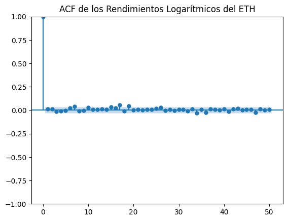
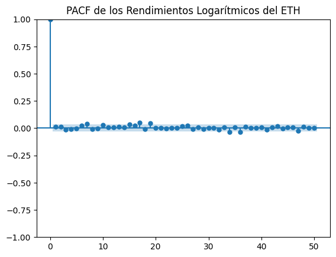
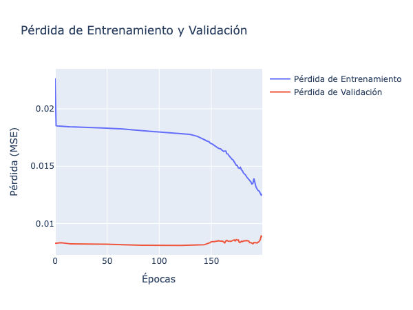
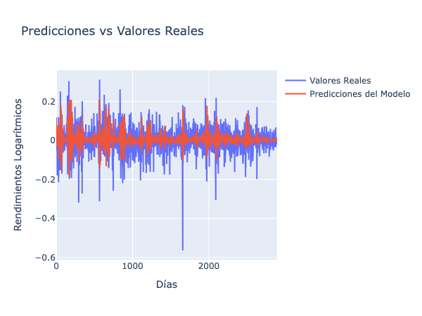
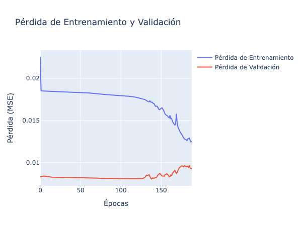
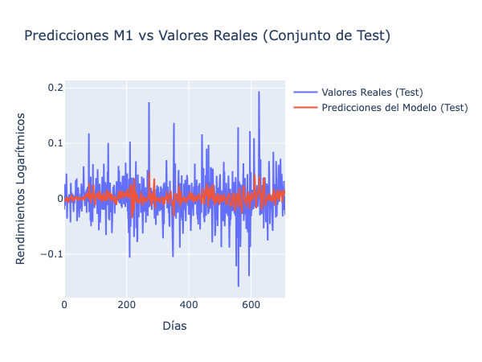
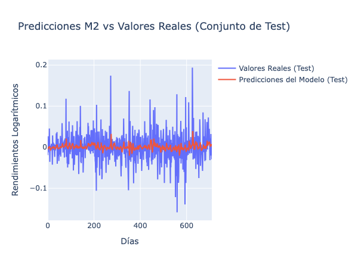
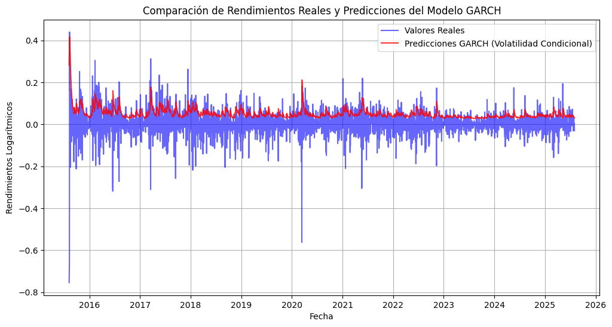
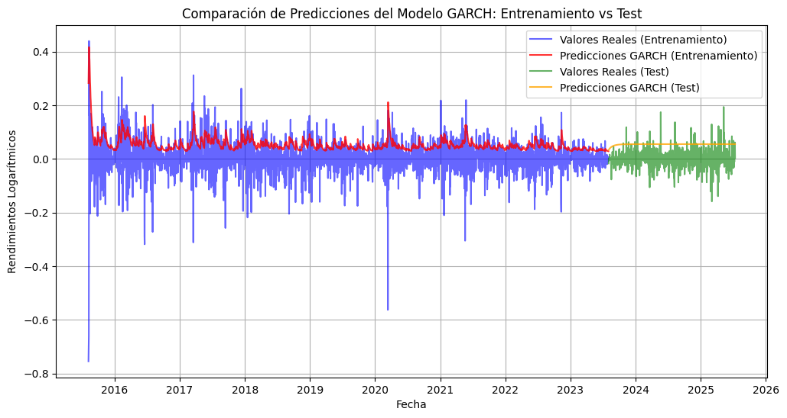

<!DOCTYPE html>


<html lang="es" data-content_root="../" >

  <head>
    <meta charset="utf-8" />
    <meta name="viewport" content="width=device-width, initial-scale=1.0" /><meta name="viewport" content="width=device-width, initial-scale=1" />

    <title>5. Estructuras de redes profundas para series de tiempo univariadas &#8212; documentación de cursos - 1.0</title>
  
  
  
  <script data-cfasync="false">
    document.documentElement.dataset.mode = localStorage.getItem("mode") || "";
    document.documentElement.dataset.theme = localStorage.getItem("theme") || "";
  </script>
  <!--
    this give us a css class that will be invisible only if js is disabled
  -->
  <noscript>
    <style>
      .pst-js-only { display: none !important; }

    </style>
  </noscript>
  
  <!-- Loaded before other Sphinx assets -->
  <link href="../_static/styles/theme.css?digest=8878045cc6db502f8baf" rel="stylesheet" />
<link href="../_static/styles/pydata-sphinx-theme.css?digest=8878045cc6db502f8baf" rel="stylesheet" />

    <link rel="stylesheet" type="text/css" href="../_static/pygments.css?v=8f2a1f02" />
  
  <!-- So that users can add custom icons -->
  <script src="../_static/scripts/fontawesome.js?digest=8878045cc6db502f8baf"></script>
  <!-- Pre-loaded scripts that we'll load fully later -->
  <link rel="preload" as="script" href="../_static/scripts/bootstrap.js?digest=8878045cc6db502f8baf" />
<link rel="preload" as="script" href="../_static/scripts/pydata-sphinx-theme.js?digest=8878045cc6db502f8baf" />

    <script src="../_static/documentation_options.js?v=4936afed"></script>
    <script src="../_static/doctools.js?v=9bcbadda"></script>
    <script src="../_static/sphinx_highlight.js?v=dc90522c"></script>
    <script src="../_static/translations.js?v=f85f4cfb"></script>
    <script>DOCUMENTATION_OPTIONS.pagename = 'sesiones/5_deeplearning';</script>
    <link rel="index" title="Índice" href="../genindex.html" />
    <link rel="search" title="Búsqueda" href="../search.html" />
    <link rel="next" title="Recursos Adicionales" href="../recursos.html" />
    <link rel="prev" title="4. Modelar una serie de tiempo con MLP" href="4_mlp_model.html" />
  <meta name="viewport" content="width=device-width, initial-scale=1"/>
  <meta name="docsearch:language" content="es"/>
  <meta name="docsearch:version" content="" />
  </head>
  
  
  <body data-bs-spy="scroll" data-bs-target=".bd-toc-nav" data-offset="180" data-bs-root-margin="0px 0px -60%" data-default-mode="">

  
  
  <div id="pst-skip-link" class="skip-link d-print-none"><a href="#main-content">Saltar al contenido principal</a></div>
  
  <div id="pst-scroll-pixel-helper"></div>
  
  <button type="button" class="btn rounded-pill" id="pst-back-to-top">
    <i class="fa-solid fa-arrow-up"></i>Volver arriba</button>

  
  <dialog id="pst-search-dialog">
    
<form class="bd-search d-flex align-items-center"
      action="../search.html"
      method="get">
  <i class="fa-solid fa-magnifying-glass"></i>
  <input type="search"
         class="form-control"
         name="q"
         placeholder="Search the docs ..."
         aria-label="Search the docs ..."
         autocomplete="off"
         autocorrect="off"
         autocapitalize="off"
         spellcheck="false"/>
  <span class="search-button__kbd-shortcut"><kbd class="kbd-shortcut__modifier">Ctrl</kbd>+<kbd>K</kbd></span>
</form>
  </dialog>

  <div class="pst-async-banner-revealer d-none">
  <aside id="bd-header-version-warning" class="d-none d-print-none" aria-label="Advertencia de versión"></aside>
</div>

  
    <header class="bd-header navbar navbar-expand-lg bd-navbar d-print-none">
<div class="bd-header__inner bd-page-width">
  <button class="pst-navbar-icon sidebar-toggle primary-toggle" aria-label="Navegación del sitio">
    <span class="fa-solid fa-bars"></span>
  </button>
  
  
  <div class="col-lg-3 navbar-header-items__start">
    
      <div class="navbar-item">

  
    
  

<a class="navbar-brand logo" href="../index.html">
  
  
  
  
  
  
    <p class="title logo__title">documentación de cursos - 1.0</p>
  
</a></div>
    
  </div>
  
  <div class="col-lg-9 navbar-header-items">
    
    <div class="me-auto navbar-header-items__center">
      
        <div class="navbar-item">
<nav>
  <ul class="bd-navbar-elements navbar-nav">
    
<li class="nav-item ">
  <a class="nav-link nav-internal" href="../introduccion.html">
    Introducción
  </a>
</li>


<li class="nav-item ">
  <a class="nav-link nav-internal" href="../instalacion.html">
    Instalación y Configuración
  </a>
</li>


<li class="nav-item current active">
  <a class="nav-link nav-internal" href="index.html">
    Sesiones
  </a>
</li>


<li class="nav-item ">
  <a class="nav-link nav-internal" href="../recursos.html">
    Recursos Adicionales
  </a>
</li>


<li class="nav-item ">
  <a class="nav-link nav-internal" href="../faq.html">
    Preguntas Frecuentes (FAQ)
  </a>
</li>

            <li class="nav-item dropdown">
                <button class="btn dropdown-toggle nav-item" type="button"
                data-bs-toggle="dropdown" aria-expanded="false"
                aria-controls="pst-nav-more-links">
                    More
                </button>
                <ul id="pst-nav-more-links" class="dropdown-menu">
                    
<li class=" ">
  <a class="nav-link dropdown-item nav-internal" href="../glosario.html">
    Glosario
  </a>
</li>

                </ul>
            </li>
            
  </ul>
</nav></div>
      
    </div>
    
    
    <div class="navbar-header-items__end">
      
        <div class="navbar-item navbar-persistent--container">
          

<button class="btn search-button-field search-button__button pst-js-only" title="Búsqueda" aria-label="Búsqueda" data-bs-placement="bottom" data-bs-toggle="tooltip">
 <i class="fa-solid fa-magnifying-glass"></i>
 <span class="search-button__default-text">Búsqueda</span>
 <span class="search-button__kbd-shortcut"><kbd class="kbd-shortcut__modifier">Ctrl</kbd>+<kbd class="kbd-shortcut__modifier">K</kbd></span>
</button>
        </div>
      
      
        <div class="navbar-item"><ul class="navbar-icon-links"
    aria-label="Icon Links">
        <li class="nav-item">
          
          
          
          
          
          
          
          
          <a href="https://github.com/Nataliaprins/SeriesTemporalesDeepLearning" title="GitHub" class="nav-link pst-navbar-icon" rel="noopener" target="_blank" data-bs-toggle="tooltip" data-bs-placement="bottom"><i class="fa-brands fa-square-github fa-lg" aria-hidden="true"></i>
            <span class="sr-only">GitHub</span></a>
        </li>
</ul></div>
      
    </div>
    
  </div>
  
  
    <div class="navbar-persistent--mobile">

<button class="btn search-button-field search-button__button pst-js-only" title="Búsqueda" aria-label="Búsqueda" data-bs-placement="bottom" data-bs-toggle="tooltip">
 <i class="fa-solid fa-magnifying-glass"></i>
 <span class="search-button__default-text">Búsqueda</span>
 <span class="search-button__kbd-shortcut"><kbd class="kbd-shortcut__modifier">Ctrl</kbd>+<kbd class="kbd-shortcut__modifier">K</kbd></span>
</button>
    </div>
  

  
    <button class="pst-navbar-icon sidebar-toggle secondary-toggle" aria-label="En esta página">
      <span class="fa-solid fa-outdent"></span>
    </button>
  
</div>

    </header>
  

  <div class="bd-container">
    <div class="bd-container__inner bd-page-width">
      
      
      
      <dialog id="pst-primary-sidebar-modal"></dialog>
      <div id="pst-primary-sidebar" class="bd-sidebar-primary bd-sidebar">
        

  
  <div class="sidebar-header-items sidebar-primary__section">
    
    
      <div class="sidebar-header-items__center">
        
          
          
            <div class="navbar-item">
<nav>
  <ul class="bd-navbar-elements navbar-nav">
    
<li class="nav-item ">
  <a class="nav-link nav-internal" href="../introduccion.html">
    Introducción
  </a>
</li>


<li class="nav-item ">
  <a class="nav-link nav-internal" href="../instalacion.html">
    Instalación y Configuración
  </a>
</li>


<li class="nav-item current active">
  <a class="nav-link nav-internal" href="index.html">
    Sesiones
  </a>
</li>


<li class="nav-item ">
  <a class="nav-link nav-internal" href="../recursos.html">
    Recursos Adicionales
  </a>
</li>


<li class="nav-item ">
  <a class="nav-link nav-internal" href="../faq.html">
    Preguntas Frecuentes (FAQ)
  </a>
</li>


<li class="nav-item ">
  <a class="nav-link nav-internal" href="../glosario.html">
    Glosario
  </a>
</li>

  </ul>
</nav></div>
          
        
      </div>
    
    
    
      <div class="sidebar-header-items__end">
        
          <div class="navbar-item"><ul class="navbar-icon-links"
    aria-label="Icon Links">
        <li class="nav-item">
          
          
          
          
          
          
          
          
          <a href="https://github.com/Nataliaprins/SeriesTemporalesDeepLearning" title="GitHub" class="nav-link pst-navbar-icon" rel="noopener" target="_blank" data-bs-toggle="tooltip" data-bs-placement="bottom"><i class="fa-brands fa-square-github fa-lg" aria-hidden="true"></i>
            <span class="sr-only">GitHub</span></a>
        </li>
</ul></div>
        
      </div>
    
  </div>
  
    <div class="sidebar-primary-items__start sidebar-primary__section">
        <div class="sidebar-primary-item">
<nav class="bd-docs-nav bd-links"
     aria-label="Navegación del sección">
  <p class="bd-links__title" role="heading" aria-level="1">Navegación del sección</p>
  <div class="bd-toc-item navbar-nav"><ul class="current nav bd-sidenav">
<li class="toctree-l1"><a class="reference internal" href="1_introduccion_series_tiempo.html">1. Fundamentos de Series de Tiempo</a></li>
<li class="toctree-l1"><a class="reference internal" href="2_modelos_tradicionales.html">2. Pronósticos con Modelos Tradicionales</a></li>
<li class="toctree-l1"><a class="reference internal" href="3_MLP.html">3. MLP para series de tiempo</a></li>
<li class="toctree-l1"><a class="reference internal" href="4_mlp_model.html">4. Modelar una serie de tiempo con MLP</a></li>
<li class="toctree-l1 current active"><a class="current reference internal" href="#">5. Estructuras de redes profundas para series de tiempo univariadas</a></li>
</ul>
</div>
</nav></div>
    </div>
  
  
  <div class="sidebar-primary-items__end sidebar-primary__section">
      <div class="sidebar-primary-item">
<div id="ethical-ad-placement"
      class="flat"
      data-ea-publisher="readthedocs"
      data-ea-type="readthedocs-sidebar"
      data-ea-manual="true">
</div></div>
  </div>


      </div>
      
      <main id="main-content" class="bd-main" role="main">
        
        
          <div class="bd-content">
            <div class="bd-article-container">
              
              <div class="bd-header-article d-print-none">
<div class="header-article-items header-article__inner">
  
    <div class="header-article-items__start">
      
        <div class="header-article-item">

<nav aria-label="Miga de pan" class="d-print-none">
  <ul class="bd-breadcrumbs">
    
    <li class="breadcrumb-item breadcrumb-home">
      <a href="../index.html" class="nav-link" aria-label="Inicio">
        <i class="fa-solid fa-home"></i>
      </a>
    </li>
    
    <li class="breadcrumb-item"><a href="index.html" class="nav-link">Sesiones</a></li>
    
    <li class="breadcrumb-item active" aria-current="page"><span class="ellipsis"><span class="section-number">5. </span>Estructuras de redes profundas para series de tiempo univariadas</span></li>
  </ul>
</nav>
</div>
      
    </div>
  
  
</div>
</div>
              
              
              
                
<div id="searchbox"></div>
                <article class="bd-article">
                  
  <section id="estructuras-de-redes-profundas-para-series-de-tiempo-univariadas">
<h1><span class="section-number">5. </span>Estructuras de redes profundas para series de tiempo univariadas<a class="headerlink" href="#estructuras-de-redes-profundas-para-series-de-tiempo-univariadas" title="Link to this heading">#</a></h1>
<p>Para este ejercicio, utilizaremos datos históricos de precios de Ethereum (ETH) desde su lanzamiento en 2015 hasta 2025. descargue los datos aquí: <a class="reference external" href="eth-usd-max.csv">eth-usd-max.csv</a>.</p>
<div class="highlight-ipython3 notranslate"><div class="highlight"><pre><span></span><span class="c1"># Read the data</span>
<span class="kn">import</span><span class="w"> </span><span class="nn">pandas</span><span class="w"> </span><span class="k">as</span><span class="w"> </span><span class="nn">pd</span>

<span class="n">data</span><span class="o">=</span> <span class="n">pd</span><span class="o">.</span><span class="n">read_csv</span><span class="p">(</span><span class="s2">&quot;/Users/nataliaacevedo/SeriesTemporalesDeepLearning/notebooks/modelo DL/eth-usd-max.csv&quot;</span><span class="p">,</span> <span class="n">index_col</span><span class="o">=</span><span class="mi">0</span><span class="p">)</span>
<span class="c1"># Dar formato de fecha a el índice</span>
<span class="n">data</span><span class="o">.</span><span class="n">index</span><span class="o">=</span> <span class="n">pd</span><span class="o">.</span><span class="n">to_datetime</span><span class="p">(</span><span class="n">data</span><span class="o">.</span><span class="n">index</span><span class="p">)</span>
<span class="n">price</span><span class="o">=</span> <span class="n">data</span><span class="p">[</span><span class="s2">&quot;price&quot;</span><span class="p">]</span>
<span class="n">price</span><span class="o">.</span><span class="n">info</span><span class="p">()</span>
<span class="n">price</span><span class="o">.</span><span class="n">head</span><span class="p">()</span>
</pre></div>
</div>
<div class="highlight-default notranslate"><div class="highlight"><pre><span></span>&lt;class &#39;pandas.core.series.Series&#39;&gt;
DatetimeIndex: 3647 entries, 2015-08-07 00:00:00+00:00 to 2025-08-01 00:00:00+00:00
Series name: price
Non-Null Count  Dtype
--------------  -----
3647 non-null   float64
dtypes: float64(1)
memory usage: 57.0 KB
</pre></div>
</div>
<div class="highlight-default notranslate"><div class="highlight"><pre><span></span><span class="n">snapped_at</span>
<span class="mi">2015</span><span class="o">-</span><span class="mi">08</span><span class="o">-</span><span class="mi">07</span> <span class="mi">00</span><span class="p">:</span><span class="mi">00</span><span class="p">:</span><span class="mi">00</span><span class="o">+</span><span class="mi">00</span><span class="p">:</span><span class="mi">00</span>    <span class="mf">2.831620</span>
<span class="mi">2015</span><span class="o">-</span><span class="mi">08</span><span class="o">-</span><span class="mi">08</span> <span class="mi">00</span><span class="p">:</span><span class="mi">00</span><span class="p">:</span><span class="mi">00</span><span class="o">+</span><span class="mi">00</span><span class="p">:</span><span class="mi">00</span>    <span class="mf">1.330750</span>
<span class="mi">2015</span><span class="o">-</span><span class="mi">08</span><span class="o">-</span><span class="mi">10</span> <span class="mi">00</span><span class="p">:</span><span class="mi">00</span><span class="p">:</span><span class="mi">00</span><span class="o">+</span><span class="mi">00</span><span class="p">:</span><span class="mi">00</span>    <span class="mf">0.687586</span>
<span class="mi">2015</span><span class="o">-</span><span class="mi">08</span><span class="o">-</span><span class="mi">11</span> <span class="mi">00</span><span class="p">:</span><span class="mi">00</span><span class="p">:</span><span class="mi">00</span><span class="o">+</span><span class="mi">00</span><span class="p">:</span><span class="mi">00</span>    <span class="mf">1.067379</span>
<span class="mi">2015</span><span class="o">-</span><span class="mi">08</span><span class="o">-</span><span class="mi">12</span> <span class="mi">00</span><span class="p">:</span><span class="mi">00</span><span class="p">:</span><span class="mi">00</span><span class="o">+</span><span class="mi">00</span><span class="p">:</span><span class="mi">00</span>    <span class="mf">1.256613</span>
<span class="n">Name</span><span class="p">:</span> <span class="n">price</span><span class="p">,</span> <span class="n">dtype</span><span class="p">:</span> <span class="n">float64</span>
</pre></div>
</div>
<section id="analisis-de-la-serie">
<h2><span class="section-number">5.1. </span>Análisis de la serie<a class="headerlink" href="#analisis-de-la-serie" title="Link to this heading">#</a></h2>
<div class="highlight-ipython3 notranslate"><div class="highlight"><pre><span></span><span class="c1"># Rendimiento logarítmico del ETH</span>
<span class="kn">import</span><span class="w"> </span><span class="nn">numpy</span><span class="w"> </span><span class="k">as</span><span class="w"> </span><span class="nn">np</span>
<span class="n">log_returns</span> <span class="o">=</span> <span class="n">np</span><span class="o">.</span><span class="n">log</span><span class="p">(</span><span class="n">price</span> <span class="o">/</span> <span class="n">price</span><span class="o">.</span><span class="n">shift</span><span class="p">(</span><span class="mi">1</span><span class="p">))</span><span class="o">.</span><span class="n">dropna</span><span class="p">()</span>
<span class="n">log_returns</span><span class="o">.</span><span class="n">describe</span><span class="p">()</span>
</pre></div>
</div>
<div class="highlight-default notranslate"><div class="highlight"><pre><span></span><span class="n">count</span>    <span class="mf">3646.000000</span>
<span class="n">mean</span>        <span class="mf">0.001968</span>
<span class="n">std</span>         <span class="mf">0.055915</span>
<span class="nb">min</span>        <span class="o">-</span><span class="mf">0.755106</span>
<span class="mi">25</span><span class="o">%</span>        <span class="o">-</span><span class="mf">0.020145</span>
<span class="mi">50</span><span class="o">%</span>         <span class="mf">0.000756</span>
<span class="mi">75</span><span class="o">%</span>         <span class="mf">0.024395</span>
<span class="nb">max</span>         <span class="mf">0.439775</span>
<span class="n">Name</span><span class="p">:</span> <span class="n">price</span><span class="p">,</span> <span class="n">dtype</span><span class="p">:</span> <span class="n">float64</span>
</pre></div>
</div>
<div class="highlight-ipython3 notranslate"><div class="highlight"><pre><span></span><span class="kn">import</span><span class="w"> </span><span class="nn">plotly.express</span><span class="w"> </span><span class="k">as</span><span class="w"> </span><span class="nn">px</span>

<span class="n">fig</span> <span class="o">=</span> <span class="n">px</span><span class="o">.</span><span class="n">line</span><span class="p">(</span><span class="n">log_returns</span><span class="p">,</span> <span class="n">title</span><span class="o">=</span><span class="s2">&quot;Rendimientos Logarítmicos del ETH&quot;</span><span class="p">,</span> <span class="n">labels</span><span class="o">=</span><span class="p">{</span><span class="s2">&quot;index&quot;</span><span class="p">:</span> <span class="s2">&quot;Fecha&quot;</span><span class="p">,</span> <span class="s2">&quot;value&quot;</span><span class="p">:</span> <span class="s2">&quot;Rendimientos Logarítmicos&quot;</span><span class="p">})</span>
<span class="n">fig</span><span class="o">.</span><span class="n">update_layout</span><span class="p">(</span>
    <span class="n">xaxis_title</span><span class="o">=</span><span class="s2">&quot;Fecha&quot;</span><span class="p">,</span>
    <span class="n">yaxis_title</span><span class="o">=</span><span class="s2">&quot;Rendimientos Logarítmicos&quot;</span><span class="p">,</span>
    <span class="n">xaxis</span><span class="o">=</span><span class="nb">dict</span><span class="p">(</span><span class="n">tickformat</span><span class="o">=</span><span class="s2">&quot;%Y&quot;</span><span class="p">)</span>  <span class="c1"># Formato para mostrar solo los años</span>
<span class="p">)</span>
<span class="n">fig</span><span class="o">.</span><span class="n">show</span><span class="p">()</span>
</pre></div>
</div>
<div class="highlight-ipython3 notranslate"><div class="highlight"><pre><span></span><span class="kn">from</span><span class="w"> </span><span class="nn">statsmodels.graphics.tsaplots</span><span class="w"> </span><span class="kn">import</span> <span class="n">plot_acf</span>

<span class="kn">import</span><span class="w"> </span><span class="nn">matplotlib.pyplot</span><span class="w"> </span><span class="k">as</span><span class="w"> </span><span class="nn">plt</span>

<span class="n">plot_acf</span><span class="p">(</span><span class="n">log_returns</span><span class="p">,</span> <span class="n">lags</span><span class="o">=</span><span class="mi">50</span><span class="p">,</span> <span class="n">title</span><span class="o">=</span><span class="s2">&quot;ACF de los Rendimientos Logarítmicos del ETH&quot;</span><span class="p">)</span>
<span class="n">plt</span><span class="o">.</span><span class="n">show</span><span class="p">()</span>
</pre></div>
</div>

<div class="highlight-ipython3 notranslate"><div class="highlight"><pre><span></span><span class="kn">from</span><span class="w"> </span><span class="nn">statsmodels.graphics.tsaplots</span><span class="w"> </span><span class="kn">import</span> <span class="n">plot_pacf</span>

<span class="n">plot_pacf</span><span class="p">(</span><span class="n">log_returns</span><span class="p">,</span> <span class="n">lags</span><span class="o">=</span><span class="mi">50</span><span class="p">,</span> <span class="n">title</span><span class="o">=</span><span class="s2">&quot;PACF de los Rendimientos Logarítmicos del ETH&quot;</span><span class="p">)</span>
<span class="n">plt</span><span class="o">.</span><span class="n">show</span><span class="p">()</span>
</pre></div>
</div>

<p>No hay evidencia estadísticamente significativa de autocorrelación en
los rendimientos del ETH.</p>
<p>Los rendimientos parecen ser independientes en el tiempo (al menos
linealmente), lo cual es típico de series financieras bien especificadas
(retornos ≈ ruido blanco).</p>
<p>Esto no implica que la varianza sea constante; puede existir
heteroscedasticidad (volatilidad variable)</p>
<div class="highlight-ipython3 notranslate"><div class="highlight"><pre><span></span><span class="kn">from</span><span class="w"> </span><span class="nn">statsmodels.stats.diagnostic</span><span class="w"> </span><span class="kn">import</span> <span class="n">acorr_ljungbox</span>

<span class="c1">#prueba de raices unitarias ADF</span>
<span class="kn">from</span><span class="w"> </span><span class="nn">statsmodels.tsa.stattools</span><span class="w"> </span><span class="kn">import</span> <span class="n">adfuller</span>
<span class="n">adf_result</span> <span class="o">=</span> <span class="n">adfuller</span><span class="p">(</span><span class="n">log_returns</span><span class="p">)</span>
<span class="nb">print</span><span class="p">(</span><span class="s2">&quot;ADF Statistic:&quot;</span><span class="p">,</span> <span class="n">adf_result</span><span class="p">[</span><span class="mi">0</span><span class="p">])</span>
<span class="nb">print</span><span class="p">(</span><span class="s2">&quot;p-value:&quot;</span><span class="p">,</span> <span class="n">adf_result</span><span class="p">[</span><span class="mi">1</span><span class="p">])</span>


<span class="c1"># Prueba de Ljung-Box</span>
<span class="n">ljung_box_test</span> <span class="o">=</span> <span class="n">acorr_ljungbox</span><span class="p">(</span><span class="n">log_returns</span><span class="p">,</span> <span class="n">lags</span><span class="o">=</span><span class="p">[</span><span class="mi">10</span><span class="p">],</span> <span class="n">return_df</span><span class="o">=</span><span class="kc">True</span><span class="p">)</span>
<span class="nb">print</span><span class="p">(</span><span class="n">ljung_box_test</span><span class="p">)</span>
</pre></div>
</div>
<div class="highlight-default notranslate"><div class="highlight"><pre><span></span><span class="n">ADF</span> <span class="n">Statistic</span><span class="p">:</span> <span class="o">-</span><span class="mf">11.4460084631789</span>
<span class="n">p</span><span class="o">-</span><span class="n">value</span><span class="p">:</span> <span class="mf">6.016416114763928e-21</span>
      <span class="n">lb_stat</span>  <span class="n">lb_pvalue</span>
<span class="mi">10</span>  <span class="mf">12.902362</span>   <span class="mf">0.229182</span>
</pre></div>
</div>
<p>La prueba ADF muestra evidencia muy fuerte de estacionariedad en los
rendimientos del ETH. Es decir, no hay raíz unitaria, la serie no tiene
tendencia sistemática, y sus fluctuaciones son estables alrededor de una
media constante (ruido blanco con posible heteroscedasticidad).</p>
<div class="highlight-ipython3 notranslate"><div class="highlight"><pre><span></span><span class="c1">#Prueba ARCH para heteroscedasticidad</span>
<span class="kn">from</span><span class="w"> </span><span class="nn">statsmodels.stats.diagnostic</span><span class="w"> </span><span class="kn">import</span> <span class="n">het_arch</span>
<span class="n">arch_test</span> <span class="o">=</span> <span class="n">het_arch</span><span class="p">(</span><span class="n">log_returns</span><span class="p">)</span>
<span class="nb">print</span><span class="p">(</span><span class="s2">&quot;ARCH Test Statistic:&quot;</span><span class="p">,</span> <span class="n">arch_test</span><span class="p">[</span><span class="mi">0</span><span class="p">])</span>
<span class="nb">print</span><span class="p">(</span><span class="s2">&quot;p-value:&quot;</span><span class="p">,</span> <span class="n">arch_test</span><span class="p">[</span><span class="mi">1</span><span class="p">])</span>
</pre></div>
</div>
<div class="highlight-default notranslate"><div class="highlight"><pre><span></span><span class="n">ARCH</span> <span class="n">Test</span> <span class="n">Statistic</span><span class="p">:</span> <span class="mf">242.72418427640844</span>
<span class="n">p</span><span class="o">-</span><span class="n">value</span><span class="p">:</span> <span class="mf">1.835123604303998e-46</span>
</pre></div>
</div>
<p>Las series financieras, energéticas, macroeconómicas, climáticas y de
demanda son las que más frecuentemente presentan varianza no constante.</p>
<p>Una serie no presenta varianza constante cuando la magnitud de sus
fluctuaciones cambia con el tiempo, mostrando períodos de alta y baja
volatilidad (lo que en finanzas llamamos volatility clustering).</p>
<p>Gráficamente, la amplitud de los valores se “estrecha” o se “ensancha”
en distintos tramos de la serie.</p>
<p>Series típicamente no homocedásticas (varianza no constante)</p>
<div class="pst-scrollable-table-container"><table class="table">
<thead>
<tr class="row-odd"><th class="head"><p>Tipo de serie</p></th>
<th class="head"><p>Ejemplo</p></th>
<th class="head"><p>Por qué no tienen varianza
constante</p></th>
</tr>
</thead>
<tbody>
<tr class="row-even"><td><p><strong>Financieras
(retornos, precios,
tasas)</strong></p></td>
<td><p>Retornos de acciones,
criptomonedas, tasas
de cambio, commodities</p></td>
<td><p>Exhiben <strong>clustering de
volatilidad</strong>: periodos de
calma seguidos de
turbulencia</p></td>
</tr>
<tr class="row-odd"><td><p><strong>Energéticas</strong></p></td>
<td><p>Precios del petróleo,
gas, electricidad</p></td>
<td><p>Alta sensibilidad a choques
externos y estacionalidad
en la volatilidad</p></td>
</tr>
<tr class="row-even"><td><p><strong>Macroeconómicas</strong></p></td>
<td><p>Inflación, PIB,
desempleo, tasas de
interés</p></td>
<td><p>Cambios estructurales,
shocks de política
económica o crisis</p></td>
</tr>
<tr class="row-odd"><td><p><strong>Meteorológicas /
Climáticas</strong></p></td>
<td><p>Temperatura,
precipitación,
velocidad del viento</p></td>
<td><p>Fenómenos extremos o
estacionales que modifican
la amplitud</p></td>
</tr>
<tr class="row-even"><td><p><strong>Demanda / Consumo
energético</strong></p></td>
<td><p>Demanda eléctrica,
tráfico de red,
transporte</p></td>
<td><p>Varianza mayor en horas
pico o temporadas altas</p></td>
</tr>
<tr class="row-odd"><td><p><strong>Series biomédicas
/ fisiológicas</strong></p></td>
<td><p>Frecuencia cardíaca,
señales EEG, presión
arterial</p></td>
<td><p>Responden a estímulos o
eventos fisiológicos con
varianza variable</p></td>
</tr>
<tr class="row-even"><td><p><strong>Series económicas
agregadas</strong></p></td>
<td><p>Volumen de comercio,
producción industrial</p></td>
<td><p>Aumentan su varianza con el
tamaño o la escala del
sistema</p></td>
</tr>
</tbody>
</table>
</div>
</section>
<section id="ajustar-un-modelo-lstm">
<h2><span class="section-number">5.2. </span>Ajustar un modelo LSTM<a class="headerlink" href="#ajustar-un-modelo-lstm" title="Link to this heading">#</a></h2>
<div class="highlight-ipython3 notranslate"><div class="highlight"><pre><span></span><span class="c1"># Dividir los datos en conjuntos de entrenamiento y prueba</span>
<span class="n">train_size</span> <span class="o">=</span> <span class="nb">int</span><span class="p">(</span><span class="nb">len</span><span class="p">(</span><span class="n">log_returns</span><span class="p">)</span> <span class="o">*</span> <span class="mf">0.8</span><span class="p">)</span>
<span class="n">train</span><span class="p">,</span> <span class="n">test</span> <span class="o">=</span> <span class="n">log_returns</span><span class="p">[:</span><span class="n">train_size</span><span class="p">],</span> <span class="n">log_returns</span><span class="p">[</span><span class="n">train_size</span><span class="p">:]</span>
<span class="nb">print</span><span class="p">(</span><span class="sa">f</span><span class="s2">&quot;Train size: </span><span class="si">{</span><span class="nb">len</span><span class="p">(</span><span class="n">train</span><span class="p">)</span><span class="si">}</span><span class="s2">, Test size: </span><span class="si">{</span><span class="nb">len</span><span class="p">(</span><span class="n">test</span><span class="p">)</span><span class="si">}</span><span class="s2">&quot;</span><span class="p">)</span>
</pre></div>
</div>
<div class="highlight-default notranslate"><div class="highlight"><pre><span></span><span class="n">Train</span> <span class="n">size</span><span class="p">:</span> <span class="mi">2916</span><span class="p">,</span> <span class="n">Test</span> <span class="n">size</span><span class="p">:</span> <span class="mi">730</span>
</pre></div>
</div>
<div class="highlight-ipython3 notranslate"><div class="highlight"><pre><span></span><span class="c1"># extraer las secuencias para los rendimientos logarítmicos para train y test</span>
<span class="k">def</span><span class="w"> </span><span class="nf">create_sequences</span><span class="p">(</span><span class="n">data</span><span class="p">,</span> <span class="n">seq_length</span><span class="p">):</span>
    <span class="n">sequences</span> <span class="o">=</span> <span class="p">[]</span>
    <span class="n">targets</span> <span class="o">=</span> <span class="p">[]</span>
    <span class="k">for</span> <span class="n">i</span> <span class="ow">in</span> <span class="nb">range</span><span class="p">(</span><span class="nb">len</span><span class="p">(</span><span class="n">data</span><span class="p">)</span> <span class="o">-</span> <span class="n">seq_length</span><span class="p">):</span>
        <span class="n">sequences</span><span class="o">.</span><span class="n">append</span><span class="p">(</span><span class="n">data</span><span class="p">[</span><span class="n">i</span><span class="p">:</span><span class="n">i</span> <span class="o">+</span> <span class="n">seq_length</span><span class="p">])</span>
        <span class="n">targets</span><span class="o">.</span><span class="n">append</span><span class="p">(</span><span class="n">data</span><span class="p">[</span><span class="n">i</span> <span class="o">+</span> <span class="n">seq_length</span><span class="p">])</span>
    <span class="k">return</span> <span class="n">np</span><span class="o">.</span><span class="n">array</span><span class="p">(</span><span class="n">sequences</span><span class="p">),</span> <span class="n">np</span><span class="o">.</span><span class="n">array</span><span class="p">(</span><span class="n">targets</span><span class="p">)</span>

<span class="n">seq_length</span> <span class="o">=</span> <span class="mi">20</span>  <span class="c1"># Número de días anteriores para predecir el siguiente día</span>

<span class="n">X_train</span><span class="p">,</span> <span class="n">y_train</span> <span class="o">=</span> <span class="n">create_sequences</span><span class="p">(</span><span class="n">train</span><span class="o">.</span><span class="n">values</span><span class="p">,</span> <span class="n">seq_length</span><span class="p">)</span>
<span class="n">X_test</span><span class="p">,</span> <span class="n">y_test</span> <span class="o">=</span> <span class="n">create_sequences</span><span class="p">(</span><span class="n">test</span><span class="o">.</span><span class="n">values</span><span class="p">,</span> <span class="n">seq_length</span><span class="p">)</span>
<span class="nb">print</span><span class="p">(</span><span class="s2">&quot;Shape of X_train:&quot;</span><span class="p">,</span> <span class="n">X_train</span><span class="o">.</span><span class="n">shape</span><span class="p">)</span>
<span class="nb">print</span><span class="p">(</span><span class="s2">&quot;Shape of y_train:&quot;</span><span class="p">,</span> <span class="n">y_train</span><span class="o">.</span><span class="n">shape</span><span class="p">)</span>
<span class="nb">print</span><span class="p">(</span><span class="s2">&quot;Shape of X_test:&quot;</span><span class="p">,</span> <span class="n">X_test</span><span class="o">.</span><span class="n">shape</span><span class="p">)</span>
<span class="nb">print</span><span class="p">(</span><span class="s2">&quot;Shape of y_test:&quot;</span><span class="p">,</span> <span class="n">y_test</span><span class="o">.</span><span class="n">shape</span><span class="p">)</span>
</pre></div>
</div>
<div class="highlight-default notranslate"><div class="highlight"><pre><span></span><span class="n">Shape</span> <span class="n">of</span> <span class="n">X_train</span><span class="p">:</span> <span class="p">(</span><span class="mi">2896</span><span class="p">,</span> <span class="mi">20</span><span class="p">)</span>
<span class="n">Shape</span> <span class="n">of</span> <span class="n">y_train</span><span class="p">:</span> <span class="p">(</span><span class="mi">2896</span><span class="p">,)</span>
<span class="n">Shape</span> <span class="n">of</span> <span class="n">X_test</span><span class="p">:</span> <span class="p">(</span><span class="mi">710</span><span class="p">,</span> <span class="mi">20</span><span class="p">)</span>
<span class="n">Shape</span> <span class="n">of</span> <span class="n">y_test</span><span class="p">:</span> <span class="p">(</span><span class="mi">710</span><span class="p">,)</span>
</pre></div>
</div>
<div class="highlight-ipython3 notranslate"><div class="highlight"><pre><span></span><span class="kn">from</span><span class="w"> </span><span class="nn">sklearn.preprocessing</span><span class="w"> </span><span class="kn">import</span> <span class="n">MinMaxScaler</span>

<span class="c1"># Escalar las secuencias con MinMaxScaler para train y test</span>

<span class="n">scaler_X</span> <span class="o">=</span> <span class="n">MinMaxScaler</span><span class="p">(</span><span class="n">feature_range</span><span class="o">=</span><span class="p">(</span><span class="o">-</span><span class="mi">1</span><span class="p">,</span> <span class="mi">1</span><span class="p">))</span>
<span class="n">scaler_y</span> <span class="o">=</span> <span class="n">MinMaxScaler</span><span class="p">(</span><span class="n">feature_range</span><span class="o">=</span><span class="p">(</span><span class="o">-</span><span class="mi">1</span><span class="p">,</span> <span class="mi">1</span><span class="p">))</span>

<span class="c1"># Solo se ajusta con el TRAIN</span>
<span class="n">X_train_scaled</span> <span class="o">=</span> <span class="n">scaler_X</span><span class="o">.</span><span class="n">fit_transform</span><span class="p">(</span><span class="n">X_train</span><span class="o">.</span><span class="n">reshape</span><span class="p">(</span><span class="o">-</span><span class="mi">1</span><span class="p">,</span> <span class="n">X_train</span><span class="o">.</span><span class="n">shape</span><span class="p">[</span><span class="o">-</span><span class="mi">1</span><span class="p">]))</span><span class="o">.</span><span class="n">reshape</span><span class="p">(</span><span class="n">X_train</span><span class="o">.</span><span class="n">shape</span><span class="p">)</span>
<span class="n">y_train_scaled</span> <span class="o">=</span> <span class="n">scaler_y</span><span class="o">.</span><span class="n">fit_transform</span><span class="p">(</span><span class="n">y_train</span><span class="o">.</span><span class="n">reshape</span><span class="p">(</span><span class="o">-</span><span class="mi">1</span><span class="p">,</span> <span class="mi">1</span><span class="p">))</span><span class="o">.</span><span class="n">flatten</span><span class="p">()</span>

<span class="c1"># El TEST solo se transforma con los límites del TRAIN</span>
<span class="n">X_test_scaled</span> <span class="o">=</span> <span class="n">scaler_X</span><span class="o">.</span><span class="n">transform</span><span class="p">(</span><span class="n">X_test</span><span class="o">.</span><span class="n">reshape</span><span class="p">(</span><span class="o">-</span><span class="mi">1</span><span class="p">,</span> <span class="n">X_test</span><span class="o">.</span><span class="n">shape</span><span class="p">[</span><span class="o">-</span><span class="mi">1</span><span class="p">]))</span><span class="o">.</span><span class="n">reshape</span><span class="p">(</span><span class="n">X_test</span><span class="o">.</span><span class="n">shape</span><span class="p">)</span>
<span class="n">y_test_scaled</span> <span class="o">=</span> <span class="n">scaler_y</span><span class="o">.</span><span class="n">transform</span><span class="p">(</span><span class="n">y_test</span><span class="o">.</span><span class="n">reshape</span><span class="p">(</span><span class="o">-</span><span class="mi">1</span><span class="p">,</span> <span class="mi">1</span><span class="p">))</span><span class="o">.</span><span class="n">flatten</span><span class="p">()</span>

<span class="nb">print</span><span class="p">(</span><span class="s2">&quot;Scaled X_train shape:&quot;</span><span class="p">,</span> <span class="n">X_train_scaled</span><span class="o">.</span><span class="n">shape</span><span class="p">)</span>
<span class="nb">print</span><span class="p">(</span><span class="s2">&quot;Scaled y_train shape:&quot;</span><span class="p">,</span> <span class="n">y_train_scaled</span><span class="o">.</span><span class="n">shape</span><span class="p">)</span>
<span class="nb">print</span><span class="p">(</span><span class="s2">&quot;Scaled X_test shape:&quot;</span><span class="p">,</span> <span class="n">X_test_scaled</span><span class="o">.</span><span class="n">shape</span><span class="p">)</span>
<span class="nb">print</span><span class="p">(</span><span class="s2">&quot;Scaled y_test shape:&quot;</span><span class="p">,</span> <span class="n">y_test_scaled</span><span class="o">.</span><span class="n">shape</span><span class="p">)</span>
</pre></div>
</div>
<div class="highlight-default notranslate"><div class="highlight"><pre><span></span><span class="n">Scaled</span> <span class="n">X_train</span> <span class="n">shape</span><span class="p">:</span> <span class="p">(</span><span class="mi">2896</span><span class="p">,</span> <span class="mi">20</span><span class="p">)</span>
<span class="n">Scaled</span> <span class="n">y_train</span> <span class="n">shape</span><span class="p">:</span> <span class="p">(</span><span class="mi">2896</span><span class="p">,)</span>
<span class="n">Scaled</span> <span class="n">X_test</span> <span class="n">shape</span><span class="p">:</span> <span class="p">(</span><span class="mi">710</span><span class="p">,</span> <span class="mi">20</span><span class="p">)</span>
<span class="n">Scaled</span> <span class="n">y_test</span> <span class="n">shape</span><span class="p">:</span> <span class="p">(</span><span class="mi">710</span><span class="p">,)</span>
</pre></div>
</div>
<div class="highlight-ipython3 notranslate"><div class="highlight"><pre><span></span><span class="kn">from</span><span class="w"> </span><span class="nn">tensorflow.keras.models</span><span class="w"> </span><span class="kn">import</span> <span class="n">Sequential</span>
<span class="kn">from</span><span class="w"> </span><span class="nn">tensorflow.keras.layers</span><span class="w"> </span><span class="kn">import</span> <span class="n">LSTM</span><span class="p">,</span> <span class="n">Dense</span><span class="p">,</span> <span class="n">Input</span>

<span class="c1"># Asegurarse de que X tenga tres dimensiones</span>
<span class="n">X</span> <span class="o">=</span> <span class="n">X_train_scaled</span><span class="o">.</span><span class="n">reshape</span><span class="p">((</span><span class="n">X_train_scaled</span><span class="o">.</span><span class="n">shape</span><span class="p">[</span><span class="mi">0</span><span class="p">],</span> <span class="n">X_train_scaled</span><span class="o">.</span><span class="n">shape</span><span class="p">[</span><span class="mi">1</span><span class="p">],</span> <span class="mi">1</span><span class="p">))</span>
<span class="nb">print</span><span class="p">(</span><span class="s2">&quot;Reshaped X shape:&quot;</span><span class="p">,</span> <span class="n">X</span><span class="o">.</span><span class="n">shape</span><span class="p">)</span>

<span class="c1"># Crear el modelo LSTM</span>
<span class="n">model</span> <span class="o">=</span> <span class="n">Sequential</span><span class="p">([</span>
    <span class="n">Input</span><span class="p">(</span><span class="n">shape</span><span class="o">=</span><span class="p">(</span><span class="n">X</span><span class="o">.</span><span class="n">shape</span><span class="p">[</span><span class="mi">1</span><span class="p">],</span> <span class="n">X</span><span class="o">.</span><span class="n">shape</span><span class="p">[</span><span class="mi">2</span><span class="p">])),</span>  <span class="c1"># Define explícitamente la forma de entrada</span>
    <span class="n">LSTM</span><span class="p">(</span><span class="mi">64</span><span class="p">,</span> <span class="n">activation</span><span class="o">=</span><span class="s1">&#39;tanh&#39;</span><span class="p">,</span> <span class="n">return_sequences</span><span class="o">=</span><span class="kc">True</span><span class="p">),</span>
    <span class="n">LSTM</span><span class="p">(</span><span class="mi">32</span><span class="p">,</span> <span class="n">activation</span><span class="o">=</span><span class="s1">&#39;tanh&#39;</span><span class="p">),</span>
    <span class="n">Dense</span><span class="p">(</span><span class="mi">1</span><span class="p">)</span>  <span class="c1"># Capa de salida con una neurona para la predicción</span>
<span class="p">])</span>

<span class="c1"># Compilar el modelo</span>
<span class="n">model</span><span class="o">.</span><span class="n">compile</span><span class="p">(</span><span class="n">optimizer</span><span class="o">=</span><span class="s1">&#39;adam&#39;</span><span class="p">,</span> <span class="n">loss</span><span class="o">=</span><span class="s1">&#39;mean_squared_error&#39;</span><span class="p">)</span>

<span class="c1"># Resumen del modelo</span>
<span class="n">model</span><span class="o">.</span><span class="n">summary</span><span class="p">()</span>
</pre></div>
</div>
<div class="highlight-default notranslate"><div class="highlight"><pre><span></span><span class="n">Reshaped</span> <span class="n">X</span> <span class="n">shape</span><span class="p">:</span> <span class="p">(</span><span class="mi">2896</span><span class="p">,</span> <span class="mi">20</span><span class="p">,</span> <span class="mi">1</span><span class="p">)</span>
</pre></div>
</div>
<pre style="white-space:pre;overflow-x:auto;line-height:normal;font-family:Menlo,'DejaVu Sans Mono',consolas,'Courier New',monospace"><span style="font-weight: bold">Model: "sequential"</span>
</pre><pre style="white-space:pre;overflow-x:auto;line-height:normal;font-family:Menlo,'DejaVu Sans Mono',consolas,'Courier New',monospace">┏━━━━━━━━━━━━━━━━━━━━━━━━━━━━━━━━━┳━━━━━━━━━━━━━━━━━━━━━━━━┳━━━━━━━━━━━━━━━┓
┃<span style="font-weight: bold"> Layer (type)                    </span>┃<span style="font-weight: bold"> Output Shape           </span>┃<span style="font-weight: bold">       Param # </span>┃
┡━━━━━━━━━━━━━━━━━━━━━━━━━━━━━━━━━╇━━━━━━━━━━━━━━━━━━━━━━━━╇━━━━━━━━━━━━━━━┩
│ lstm (<span style="color: #0087ff; text-decoration-color: #0087ff">LSTM</span>)                     │ (<span style="color: #00d7ff; text-decoration-color: #00d7ff">None</span>, <span style="color: #00af00; text-decoration-color: #00af00">20</span>, <span style="color: #00af00; text-decoration-color: #00af00">64</span>)         │        <span style="color: #00af00; text-decoration-color: #00af00">16,896</span> │
├─────────────────────────────────┼────────────────────────┼───────────────┤
│ lstm_1 (<span style="color: #0087ff; text-decoration-color: #0087ff">LSTM</span>)                   │ (<span style="color: #00d7ff; text-decoration-color: #00d7ff">None</span>, <span style="color: #00af00; text-decoration-color: #00af00">32</span>)             │        <span style="color: #00af00; text-decoration-color: #00af00">12,416</span> │
├─────────────────────────────────┼────────────────────────┼───────────────┤
│ dense (<span style="color: #0087ff; text-decoration-color: #0087ff">Dense</span>)                   │ (<span style="color: #00d7ff; text-decoration-color: #00d7ff">None</span>, <span style="color: #00af00; text-decoration-color: #00af00">1</span>)              │            <span style="color: #00af00; text-decoration-color: #00af00">33</span> │
└─────────────────────────────────┴────────────────────────┴───────────────┘
</pre><pre style="white-space:pre;overflow-x:auto;line-height:normal;font-family:Menlo,'DejaVu Sans Mono',consolas,'Courier New',monospace"><span style="font-weight: bold"> Total params: </span><span style="color: #00af00; text-decoration-color: #00af00">29,345</span> (114.63 KB)
</pre><pre style="white-space:pre;overflow-x:auto;line-height:normal;font-family:Menlo,'DejaVu Sans Mono',consolas,'Courier New',monospace"><span style="font-weight: bold"> Trainable params: </span><span style="color: #00af00; text-decoration-color: #00af00">29,345</span> (114.63 KB)
</pre><pre style="white-space:pre;overflow-x:auto;line-height:normal;font-family:Menlo,'DejaVu Sans Mono',consolas,'Courier New',monospace"><span style="font-weight: bold"> Non-trainable params: </span><span style="color: #00af00; text-decoration-color: #00af00">0</span> (0.00 B)
</pre><div class="highlight-ipython3 notranslate"><div class="highlight"><pre><span></span><span class="c1">#fijar el valor semilla</span>
<span class="kn">import</span><span class="w"> </span><span class="nn">tensorflow</span><span class="w"> </span><span class="k">as</span><span class="w"> </span><span class="nn">tf</span>
<span class="n">tf</span><span class="o">.</span><span class="n">random</span><span class="o">.</span><span class="n">set_seed</span><span class="p">(</span><span class="mi">42</span><span class="p">)</span>

<span class="c1"># entrenar el modelo</span>
<span class="n">history</span> <span class="o">=</span> <span class="n">model</span><span class="o">.</span><span class="n">fit</span><span class="p">(</span><span class="n">X_train_scaled</span><span class="p">,</span> <span class="n">y_train_scaled</span><span class="p">,</span> <span class="n">epochs</span><span class="o">=</span><span class="mi">200</span><span class="p">,</span> <span class="n">batch_size</span><span class="o">=</span><span class="mi">32</span><span class="p">,</span> <span class="n">validation_split</span><span class="o">=</span><span class="mf">0.2</span><span class="p">,</span> <span class="n">verbose</span><span class="o">=</span><span class="mi">0</span><span class="p">)</span>
<span class="c1"># graficar la pérdida de entrenamiento y validación con plotly</span>
<span class="kn">import</span><span class="w"> </span><span class="nn">plotly.graph_objects</span><span class="w"> </span><span class="k">as</span><span class="w"> </span><span class="nn">go</span>
<span class="n">fig</span> <span class="o">=</span> <span class="n">go</span><span class="o">.</span><span class="n">Figure</span><span class="p">()</span>
<span class="n">fig</span><span class="o">.</span><span class="n">add_trace</span><span class="p">(</span><span class="n">go</span><span class="o">.</span><span class="n">Scatter</span><span class="p">(</span><span class="n">y</span><span class="o">=</span><span class="n">history</span><span class="o">.</span><span class="n">history</span><span class="p">[</span><span class="s1">&#39;loss&#39;</span><span class="p">],</span> <span class="n">mode</span><span class="o">=</span><span class="s1">&#39;lines&#39;</span><span class="p">,</span> <span class="n">name</span><span class="o">=</span><span class="s1">&#39;Pérdida de Entrenamiento&#39;</span><span class="p">))</span>
<span class="n">fig</span><span class="o">.</span><span class="n">add_trace</span><span class="p">(</span><span class="n">go</span><span class="o">.</span><span class="n">Scatter</span><span class="p">(</span><span class="n">y</span><span class="o">=</span><span class="n">history</span><span class="o">.</span><span class="n">history</span><span class="p">[</span><span class="s1">&#39;val_loss&#39;</span><span class="p">],</span> <span class="n">mode</span><span class="o">=</span><span class="s1">&#39;lines&#39;</span><span class="p">,</span> <span class="n">name</span><span class="o">=</span><span class="s1">&#39;Pérdida de Validación&#39;</span><span class="p">))</span>
<span class="n">fig</span><span class="o">.</span><span class="n">update_layout</span><span class="p">(</span>
    <span class="n">title</span><span class="o">=</span><span class="s2">&quot;Pérdida de Entrenamiento y Validación&quot;</span><span class="p">,</span>
    <span class="n">xaxis_title</span><span class="o">=</span><span class="s2">&quot;Épocas&quot;</span><span class="p">,</span>
    <span class="n">yaxis_title</span><span class="o">=</span><span class="s2">&quot;Pérdida (MSE)&quot;</span>
<span class="p">)</span>
<span class="n">fig</span><span class="o">.</span><span class="n">show</span><span class="p">()</span>
</pre></div>
</div>

<div class="pst-scrollable-table-container"><table class="table">
<thead>
<tr class="row-odd"><th class="head"><p>Evidencia</p></th>
<th class="head"><p>Interpretación</p></th>
</tr>
</thead>
<tbody>
<tr class="row-even"><td><p><code class="docutils literal notranslate"><span class="pre">train_loss</span></code>
↓ constante</p></td>
<td><p>El modelo sigue ajustando cada vez mejor los datos
de entrenamiento.</p></td>
</tr>
<tr class="row-odd"><td><p><code class="docutils literal notranslate"><span class="pre">val_loss</span></code> ↓
al inicio y
luego ↑</p></td>
<td><p>El modelo comienza a memorizar detalles del conjunto
de entrenamiento y pierde capacidad de
generalización.</p></td>
</tr>
<tr class="row-even"><td><p>Punto de
inflexión
(~época 150)</p></td>
<td><p>A partir de allí, el modelo deja de generalizar;
debería haberse detenido antes.</p></td>
</tr>
</tbody>
</table>
</div>
<p>EL modelo aprende correctamente (no hay underfitting ni gradientes
muertos).</p>
<p>La arquitectura tiene suficiente capacidad.</p>
<p>El modelo necesita un mecanismo de regularización o parada temprana para
evitar memorizar el ruido final.</p>
<div class="highlight-ipython3 notranslate"><div class="highlight"><pre><span></span><span class="c1"># predecir con el modelo entrenado</span>
<span class="n">y_pred_scaled</span> <span class="o">=</span> <span class="n">model</span><span class="o">.</span><span class="n">predict</span><span class="p">(</span><span class="n">X_train_scaled</span><span class="p">)</span>
<span class="n">y_pred</span> <span class="o">=</span> <span class="n">scaler_y</span><span class="o">.</span><span class="n">inverse_transform</span><span class="p">(</span><span class="n">y_pred_scaled</span><span class="o">.</span><span class="n">reshape</span><span class="p">(</span><span class="o">-</span><span class="mi">1</span><span class="p">,</span> <span class="mi">1</span><span class="p">))</span><span class="o">.</span><span class="n">flatten</span><span class="p">()</span>

<span class="c1"># graficar las predicciones vs los valores reales</span>
<span class="n">fig</span> <span class="o">=</span> <span class="n">go</span><span class="o">.</span><span class="n">Figure</span><span class="p">()</span>
<span class="n">fig</span><span class="o">.</span><span class="n">add_trace</span><span class="p">(</span><span class="n">go</span><span class="o">.</span><span class="n">Scatter</span><span class="p">(</span><span class="n">y</span><span class="o">=</span><span class="n">y_train</span><span class="p">,</span> <span class="n">mode</span><span class="o">=</span><span class="s1">&#39;lines&#39;</span><span class="p">,</span> <span class="n">name</span><span class="o">=</span><span class="s1">&#39;Valores Reales&#39;</span><span class="p">))</span>
<span class="n">fig</span><span class="o">.</span><span class="n">add_trace</span><span class="p">(</span><span class="n">go</span><span class="o">.</span><span class="n">Scatter</span><span class="p">(</span><span class="n">y</span><span class="o">=</span><span class="n">y_pred</span><span class="p">,</span> <span class="n">mode</span><span class="o">=</span><span class="s1">&#39;lines&#39;</span><span class="p">,</span> <span class="n">name</span><span class="o">=</span><span class="s1">&#39;Predicciones del Modelo&#39;</span><span class="p">))</span>
<span class="n">fig</span><span class="o">.</span><span class="n">update_layout</span><span class="p">(</span>
    <span class="n">title</span><span class="o">=</span><span class="s2">&quot;Predicciones vs Valores Reales&quot;</span><span class="p">,</span>
    <span class="n">xaxis_title</span><span class="o">=</span><span class="s2">&quot;Días&quot;</span><span class="p">,</span>
    <span class="n">yaxis_title</span><span class="o">=</span><span class="s2">&quot;Rendimientos Logarítmicos&quot;</span>
<span class="p">)</span>
<span class="n">fig</span><span class="o">.</span><span class="n">show</span><span class="p">()</span>
</pre></div>
</div>

<div class="highlight-default notranslate"><div class="highlight"><pre><span></span>91/91 ━━━━━━━━━━━━━━━━━━━━ 1s 4ms/step
</pre></div>
</div>
<p>Esto es el patrón clásico de sobreajuste leve (overfitting):</p>
<p>Evidencia Interpretación train_loss ↓ constante El modelo sigue
ajustando cada vez mejor los datos de entrenamiento. val_loss ↓ al
inicio y luego ↑ El modelo comienza a memorizar detalles del conjunto de
entrenamiento y pierde capacidad de generalización. Punto de inflexión
(~época 150) A partir de allí, el modelo deja de generalizar; debería
haberse detenido antes.</p>
<p>¿Por qué regularizar una LSTM?</p>
<p>Las LSTM tienen muchos parámetros (por las 4 puertas internas), por lo
que pueden:</p>
<ul class="simple">
<li><p>Memorizar ruido.</p></li>
<li><p>Aprender relaciones espurias.</p></li>
<li><p>O no generalizar a datos futuros (especialmente en backtesting
temporal).</p></li>
</ul>
<p>Regularizar ayuda a: * Controlar la complejidad. * Reducir la
varianza. * Y mejorar la capacidad de generalización a nuevos periodos.</p>
<div class="pst-scrollable-table-container"><table class="table">
<thead>
<tr class="row-odd"><th class="head"><p>Tipo</p></th>
<th class="head"><p>Cuándo</p></th>
<th class="head"><p>Valor
típico</p></th>
<th class="head"><p>Observación</p></th>
</tr>
</thead>
<tbody>
<tr class="row-even"><td><p><code class="docutils literal notranslate"><span class="pre">L2</span></code></p></td>
<td><p>Siempre útil, sobre todo
con pocos datos</p></td>
<td><p>1e-4 – 1e-3</p></td>
<td><p>Penaliza pesos
grandes</p></td>
</tr>
<tr class="row-odd"><td><p><code class="docutils literal notranslate"><span class="pre">dropout</span></code></p></td>
<td><p>Contra sobreajuste en
entradas</p></td>
<td><p>0.2–0.4</p></td>
<td><p>Muy efectivo</p></td>
</tr>
<tr class="row-even"><td><p><code class="docutils literal notranslate"><span class="pre">recurrent_dropout</span></code></p></td>
<td><p>Contra dependencias
falsas</p></td>
<td><p>0.1–0.2</p></td>
<td><p>Cuidado con
secuencias cortas</p></td>
</tr>
<tr class="row-odd"><td><p><code class="docutils literal notranslate"><span class="pre">EarlyStopping</span></code></p></td>
<td><p>Siempre</p></td>
<td><p>patience=10
o 20</p></td>
<td><p>Mejora
generalización</p></td>
</tr>
<tr class="row-even"><td><p><code class="docutils literal notranslate"><span class="pre">clipnorm</span></code></p></td>
<td><p>En secuencias largas</p></td>
<td><p>1–5</p></td>
<td><p>Evita
inestabilidad</p></td>
</tr>
</tbody>
</table>
</div>
</section>
<section id="ajustar-un-lstm-con-early-stopping">
<h2><span class="section-number">5.3. </span>Ajustar un LSTM con Early Stopping<a class="headerlink" href="#ajustar-un-lstm-con-early-stopping" title="Link to this heading">#</a></h2>
<div class="highlight-ipython3 notranslate"><div class="highlight"><pre><span></span><span class="kn">from</span><span class="w"> </span><span class="nn">tensorflow.keras.layers</span><span class="w"> </span><span class="kn">import</span> <span class="n">Dropout</span>
<span class="kn">from</span><span class="w"> </span><span class="nn">tensorflow.keras.optimizers</span><span class="w"> </span><span class="kn">import</span> <span class="n">Adam</span>

<span class="n">X</span> <span class="o">=</span> <span class="n">X</span><span class="o">.</span><span class="n">reshape</span><span class="p">((</span><span class="n">X</span><span class="o">.</span><span class="n">shape</span><span class="p">[</span><span class="mi">0</span><span class="p">],</span> <span class="n">X</span><span class="o">.</span><span class="n">shape</span><span class="p">[</span><span class="mi">1</span><span class="p">],</span> <span class="mi">1</span><span class="p">))</span>
<span class="c1"># Crear el modelo LSTM</span>
<span class="n">model_reg</span> <span class="o">=</span> <span class="n">Sequential</span><span class="p">([</span>
    <span class="n">Input</span><span class="p">(</span><span class="n">shape</span><span class="o">=</span><span class="p">(</span><span class="n">X</span><span class="o">.</span><span class="n">shape</span><span class="p">[</span><span class="mi">1</span><span class="p">],</span> <span class="n">X</span><span class="o">.</span><span class="n">shape</span><span class="p">[</span><span class="mi">2</span><span class="p">])),</span>  <span class="c1"># Define explícitamente la forma de entrada</span>
    <span class="n">LSTM</span><span class="p">(</span><span class="mi">64</span><span class="p">,</span> <span class="n">activation</span><span class="o">=</span><span class="s1">&#39;tanh&#39;</span><span class="p">,</span> <span class="n">return_sequences</span><span class="o">=</span><span class="kc">True</span><span class="p">),</span>
    <span class="n">LSTM</span><span class="p">(</span><span class="mi">32</span><span class="p">,</span> <span class="n">activation</span><span class="o">=</span><span class="s1">&#39;tanh&#39;</span><span class="p">,</span> <span class="n">return_sequences</span><span class="o">=</span><span class="kc">False</span><span class="p">),</span>
    <span class="n">Dense</span><span class="p">(</span><span class="mi">1</span><span class="p">,</span> <span class="n">activation</span><span class="o">=</span><span class="s1">&#39;linear&#39;</span><span class="p">)</span>
<span class="p">])</span>


<span class="n">optimizer</span> <span class="o">=</span> <span class="n">Adam</span><span class="p">(</span><span class="n">learning_rate</span><span class="o">=</span><span class="mf">1e-3</span><span class="p">)</span>
<span class="c1"># Compilar el modelo</span>
<span class="n">model_reg</span><span class="o">.</span><span class="n">compile</span><span class="p">(</span><span class="n">optimizer</span><span class="o">=</span><span class="n">optimizer</span><span class="p">,</span> <span class="n">loss</span><span class="o">=</span><span class="s1">&#39;mean_squared_error&#39;</span><span class="p">)</span>
</pre></div>
</div>
<div class="highlight-ipython3 notranslate"><div class="highlight"><pre><span></span><span class="kn">from</span><span class="w"> </span><span class="nn">tensorflow.keras.callbacks</span><span class="w"> </span><span class="kn">import</span> <span class="n">EarlyStopping</span>
<span class="kn">import</span><span class="w"> </span><span class="nn">tensorflow</span><span class="w"> </span><span class="k">as</span><span class="w"> </span><span class="nn">tf</span>

<span class="n">early_stopping</span> <span class="o">=</span> <span class="n">EarlyStopping</span><span class="p">(</span><span class="n">monitor</span><span class="o">=</span><span class="s1">&#39;val_loss&#39;</span><span class="p">,</span> <span class="n">patience</span><span class="o">=</span><span class="mi">50</span><span class="p">,</span> <span class="n">restore_best_weights</span><span class="o">=</span><span class="kc">True</span><span class="p">)</span>
<span class="c1">#fijar el valor semilla</span>
<span class="n">tf</span><span class="o">.</span><span class="n">random</span><span class="o">.</span><span class="n">set_seed</span><span class="p">(</span><span class="mi">42</span><span class="p">)</span>

<span class="c1"># entrenar el modelo</span>
<span class="n">history_reg</span> <span class="o">=</span> <span class="n">model_reg</span><span class="o">.</span><span class="n">fit</span><span class="p">(</span><span class="n">X_train_scaled</span><span class="p">,</span> <span class="n">y_train_scaled</span><span class="p">,</span> <span class="n">epochs</span><span class="o">=</span><span class="mi">200</span><span class="p">,</span> <span class="n">batch_size</span><span class="o">=</span><span class="mi">32</span><span class="p">,</span> <span class="n">validation_split</span><span class="o">=</span><span class="mf">0.2</span><span class="p">,</span> <span class="n">verbose</span><span class="o">=</span><span class="mi">0</span><span class="p">,</span> <span class="n">callbacks</span><span class="o">=</span><span class="p">[</span><span class="n">early_stopping</span><span class="p">])</span>
<span class="c1"># graficar la pérdida de entrenamiento y validación con plotly</span>
<span class="kn">import</span><span class="w"> </span><span class="nn">plotly.graph_objects</span><span class="w"> </span><span class="k">as</span><span class="w"> </span><span class="nn">go</span>
<span class="n">fig</span> <span class="o">=</span> <span class="n">go</span><span class="o">.</span><span class="n">Figure</span><span class="p">()</span>
<span class="n">fig</span><span class="o">.</span><span class="n">add_trace</span><span class="p">(</span><span class="n">go</span><span class="o">.</span><span class="n">Scatter</span><span class="p">(</span><span class="n">y</span><span class="o">=</span><span class="n">history_reg</span><span class="o">.</span><span class="n">history</span><span class="p">[</span><span class="s1">&#39;loss&#39;</span><span class="p">],</span> <span class="n">mode</span><span class="o">=</span><span class="s1">&#39;lines&#39;</span><span class="p">,</span> <span class="n">name</span><span class="o">=</span><span class="s1">&#39;Pérdida de Entrenamiento&#39;</span><span class="p">))</span>
<span class="n">fig</span><span class="o">.</span><span class="n">add_trace</span><span class="p">(</span><span class="n">go</span><span class="o">.</span><span class="n">Scatter</span><span class="p">(</span><span class="n">y</span><span class="o">=</span><span class="n">history_reg</span><span class="o">.</span><span class="n">history</span><span class="p">[</span><span class="s1">&#39;val_loss&#39;</span><span class="p">],</span> <span class="n">mode</span><span class="o">=</span><span class="s1">&#39;lines&#39;</span><span class="p">,</span> <span class="n">name</span><span class="o">=</span><span class="s1">&#39;Pérdida de Validación&#39;</span><span class="p">))</span>
<span class="n">fig</span><span class="o">.</span><span class="n">update_layout</span><span class="p">(</span>
    <span class="n">title</span><span class="o">=</span><span class="s2">&quot;Pérdida de Entrenamiento y Validación&quot;</span><span class="p">,</span>
    <span class="n">xaxis_title</span><span class="o">=</span><span class="s2">&quot;Épocas&quot;</span><span class="p">,</span>
    <span class="n">yaxis_title</span><span class="o">=</span><span class="s2">&quot;Pérdida (MSE)&quot;</span>
<span class="p">)</span>
<span class="n">fig</span><span class="o">.</span><span class="n">show</span><span class="p">()</span>
</pre></div>
</div>

<div class="highlight-ipython3 notranslate"><div class="highlight"><pre><span></span><span class="c1"># Realizar predicciones con el conjunto de test</span>
<span class="n">y_test_pred_scaled</span> <span class="o">=</span> <span class="n">model</span><span class="o">.</span><span class="n">predict</span><span class="p">(</span><span class="n">X_test_scaled</span><span class="p">)</span>
<span class="n">y_test_pred_m1</span> <span class="o">=</span> <span class="n">scaler_y</span><span class="o">.</span><span class="n">inverse_transform</span><span class="p">(</span><span class="n">y_test_pred_scaled</span><span class="o">.</span><span class="n">reshape</span><span class="p">(</span><span class="o">-</span><span class="mi">1</span><span class="p">,</span> <span class="mi">1</span><span class="p">))</span><span class="o">.</span><span class="n">flatten</span><span class="p">()</span>

<span class="c1"># Graficar las predicciones vs los valores reales del conjunto de test</span>
<span class="n">fig</span> <span class="o">=</span> <span class="n">go</span><span class="o">.</span><span class="n">Figure</span><span class="p">()</span>
<span class="n">fig</span><span class="o">.</span><span class="n">add_trace</span><span class="p">(</span><span class="n">go</span><span class="o">.</span><span class="n">Scatter</span><span class="p">(</span><span class="n">y</span><span class="o">=</span><span class="n">y_test</span><span class="p">,</span> <span class="n">mode</span><span class="o">=</span><span class="s1">&#39;lines&#39;</span><span class="p">,</span> <span class="n">name</span><span class="o">=</span><span class="s1">&#39;Valores Reales (Test)&#39;</span><span class="p">))</span>
<span class="n">fig</span><span class="o">.</span><span class="n">add_trace</span><span class="p">(</span><span class="n">go</span><span class="o">.</span><span class="n">Scatter</span><span class="p">(</span><span class="n">y</span><span class="o">=</span><span class="n">y_test_pred_m1</span><span class="p">,</span> <span class="n">mode</span><span class="o">=</span><span class="s1">&#39;lines&#39;</span><span class="p">,</span> <span class="n">name</span><span class="o">=</span><span class="s1">&#39;Predicciones del Modelo (Test)&#39;</span><span class="p">))</span>
<span class="n">fig</span><span class="o">.</span><span class="n">update_layout</span><span class="p">(</span>
    <span class="n">title</span><span class="o">=</span><span class="s2">&quot;Predicciones M1 vs Valores Reales (Conjunto de Test)&quot;</span><span class="p">,</span>
    <span class="n">xaxis_title</span><span class="o">=</span><span class="s2">&quot;Días&quot;</span><span class="p">,</span>
    <span class="n">yaxis_title</span><span class="o">=</span><span class="s2">&quot;Rendimientos Logarítmicos&quot;</span>
<span class="p">)</span>
<span class="n">fig</span><span class="o">.</span><span class="n">show</span><span class="p">()</span>
</pre></div>
</div>

<div class="highlight-default notranslate"><div class="highlight"><pre><span></span>23/23 ━━━━━━━━━━━━━━━━━━━━ 0s 5ms/step
</pre></div>
</div>
<div class="highlight-ipython3 notranslate"><div class="highlight"><pre><span></span><span class="c1">#Comprobar métricas en conjunto de test</span>
<span class="kn">from</span><span class="w"> </span><span class="nn">sklearn.metrics</span><span class="w"> </span><span class="kn">import</span> <span class="n">mean_squared_error</span><span class="p">,</span> <span class="n">mean_absolute_error</span>

<span class="n">mse</span> <span class="o">=</span> <span class="n">mean_squared_error</span><span class="p">(</span><span class="n">y_test_pred_m1</span><span class="p">,</span> <span class="n">y_test</span><span class="p">)</span>
<span class="n">mae</span> <span class="o">=</span> <span class="n">mean_absolute_error</span><span class="p">(</span><span class="n">y_test_pred_m1</span><span class="p">,</span> <span class="n">y_test</span><span class="p">)</span>
<span class="nb">print</span><span class="p">(</span><span class="s2">&quot;Mean Squared Error (MSE)-M1:&quot;</span><span class="p">,</span> <span class="n">mse</span><span class="p">)</span>
<span class="nb">print</span><span class="p">(</span><span class="s2">&quot;Mean Absolute Error (MAE)-M1:&quot;</span><span class="p">,</span> <span class="n">mae</span><span class="p">)</span>
</pre></div>
</div>
<div class="highlight-default notranslate"><div class="highlight"><pre><span></span><span class="n">Mean</span> <span class="n">Squared</span> <span class="n">Error</span> <span class="p">(</span><span class="n">MSE</span><span class="p">)</span><span class="o">-</span><span class="n">M1</span><span class="p">:</span> <span class="mf">0.0012814059785279802</span>
<span class="n">Mean</span> <span class="n">Absolute</span> <span class="n">Error</span> <span class="p">(</span><span class="n">MAE</span><span class="p">)</span><span class="o">-</span><span class="n">M1</span><span class="p">:</span> <span class="mf">0.025549416435279443</span>
</pre></div>
</div>
<div class="highlight-ipython3 notranslate"><div class="highlight"><pre><span></span><span class="c1"># Realizar predicciones con el conjunto de test con modelo Regularizado</span>
<span class="n">y_test_pred_scaled</span> <span class="o">=</span> <span class="n">model_reg</span><span class="o">.</span><span class="n">predict</span><span class="p">(</span><span class="n">X_test_scaled</span><span class="p">)</span>
<span class="n">y_test_pred_m2</span> <span class="o">=</span> <span class="n">scaler_y</span><span class="o">.</span><span class="n">inverse_transform</span><span class="p">(</span><span class="n">y_test_pred_scaled</span><span class="o">.</span><span class="n">reshape</span><span class="p">(</span><span class="o">-</span><span class="mi">1</span><span class="p">,</span> <span class="mi">1</span><span class="p">))</span><span class="o">.</span><span class="n">flatten</span><span class="p">()</span>

<span class="c1"># Graficar las predicciones vs los valores reales del conjunto de test</span>
<span class="n">fig</span> <span class="o">=</span> <span class="n">go</span><span class="o">.</span><span class="n">Figure</span><span class="p">()</span>
<span class="n">fig</span><span class="o">.</span><span class="n">add_trace</span><span class="p">(</span><span class="n">go</span><span class="o">.</span><span class="n">Scatter</span><span class="p">(</span><span class="n">y</span><span class="o">=</span><span class="n">y_test</span><span class="p">,</span> <span class="n">mode</span><span class="o">=</span><span class="s1">&#39;lines&#39;</span><span class="p">,</span> <span class="n">name</span><span class="o">=</span><span class="s1">&#39;Valores Reales (Test)&#39;</span><span class="p">))</span>
<span class="n">fig</span><span class="o">.</span><span class="n">add_trace</span><span class="p">(</span><span class="n">go</span><span class="o">.</span><span class="n">Scatter</span><span class="p">(</span><span class="n">y</span><span class="o">=</span><span class="n">y_test_pred_m2</span><span class="p">,</span> <span class="n">mode</span><span class="o">=</span><span class="s1">&#39;lines&#39;</span><span class="p">,</span> <span class="n">name</span><span class="o">=</span><span class="s1">&#39;Predicciones del Modelo (Test)&#39;</span><span class="p">))</span>
<span class="n">fig</span><span class="o">.</span><span class="n">update_layout</span><span class="p">(</span>
    <span class="n">title</span><span class="o">=</span><span class="s2">&quot;Predicciones M2 vs Valores Reales (Conjunto de Test)&quot;</span><span class="p">,</span>
    <span class="n">xaxis_title</span><span class="o">=</span><span class="s2">&quot;Días&quot;</span><span class="p">,</span>
    <span class="n">yaxis_title</span><span class="o">=</span><span class="s2">&quot;Rendimientos Logarítmicos&quot;</span>
<span class="p">)</span>
<span class="n">fig</span><span class="o">.</span><span class="n">show</span><span class="p">()</span>
</pre></div>
</div>

<div class="highlight-default notranslate"><div class="highlight"><pre><span></span>23/23 ━━━━━━━━━━━━━━━━━━━━ 0s 3ms/step
</pre></div>
</div>
<div class="highlight-ipython3 notranslate"><div class="highlight"><pre><span></span><span class="c1">#Comprobar métricas en conjunto de test</span>
<span class="kn">from</span><span class="w"> </span><span class="nn">sklearn.metrics</span><span class="w"> </span><span class="kn">import</span> <span class="n">mean_squared_error</span><span class="p">,</span> <span class="n">mean_absolute_error</span>

<span class="n">mse</span> <span class="o">=</span> <span class="n">mean_squared_error</span><span class="p">(</span><span class="n">y_test_pred_m2</span><span class="p">,</span> <span class="n">y_test</span><span class="p">)</span>
<span class="n">mae</span> <span class="o">=</span> <span class="n">mean_absolute_error</span><span class="p">(</span><span class="n">y_test_pred_m2</span><span class="p">,</span> <span class="n">y_test</span><span class="p">)</span>
<span class="nb">print</span><span class="p">(</span><span class="s2">&quot;Mean Squared Error (MSE)-M2:&quot;</span><span class="p">,</span> <span class="n">mse</span><span class="p">)</span>
<span class="nb">print</span><span class="p">(</span><span class="s2">&quot;Mean Absolute Error (MAE)-M2:&quot;</span><span class="p">,</span> <span class="n">mae</span><span class="p">)</span>
</pre></div>
</div>
<div class="highlight-default notranslate"><div class="highlight"><pre><span></span><span class="n">Mean</span> <span class="n">Squared</span> <span class="n">Error</span> <span class="p">(</span><span class="n">MSE</span><span class="p">)</span><span class="o">-</span><span class="n">M2</span><span class="p">:</span> <span class="mf">0.0011946981891149161</span>
<span class="n">Mean</span> <span class="n">Absolute</span> <span class="n">Error</span> <span class="p">(</span><span class="n">MAE</span><span class="p">)</span><span class="o">-</span><span class="n">M2</span><span class="p">:</span> <span class="mf">0.024036314007303047</span>
</pre></div>
</div>
</section>
<section id="comparar-con-un-modelo-clasico-garch">
<h2><span class="section-number">5.4. </span>Comparar con un modelo clásico GARCH<a class="headerlink" href="#comparar-con-un-modelo-clasico-garch" title="Link to this heading">#</a></h2>
<div class="highlight-ipython3 notranslate"><div class="highlight"><pre><span></span><span class="kn">from</span><span class="w"> </span><span class="nn">arch</span><span class="w"> </span><span class="kn">import</span> <span class="n">arch_model</span>

<span class="c1"># Ajustar un modelo GARCH(1,1) a los rendimientos logarítmicos</span>
<span class="n">garch_model</span> <span class="o">=</span> <span class="n">arch_model</span><span class="p">(</span><span class="n">log_returns</span><span class="p">,</span> <span class="n">vol</span><span class="o">=</span><span class="s1">&#39;Garch&#39;</span><span class="p">,</span> <span class="n">p</span><span class="o">=</span><span class="mi">1</span><span class="p">,</span> <span class="n">q</span><span class="o">=</span><span class="mi">1</span><span class="p">,</span> <span class="n">mean</span><span class="o">=</span><span class="s1">&#39;Constant&#39;</span><span class="p">,</span> <span class="n">dist</span><span class="o">=</span><span class="s1">&#39;normal&#39;</span><span class="p">,</span> <span class="n">rescale</span><span class="o">=</span><span class="kc">False</span><span class="p">)</span>
<span class="n">garch_fit</span> <span class="o">=</span> <span class="n">garch_model</span><span class="o">.</span><span class="n">fit</span><span class="p">(</span><span class="n">disp</span><span class="o">=</span><span class="s1">&#39;off&#39;</span><span class="p">)</span>

<span class="c1"># Resumen del modelo ajustado</span>
<span class="nb">print</span><span class="p">(</span><span class="n">garch_fit</span><span class="o">.</span><span class="n">summary</span><span class="p">())</span>
</pre></div>
</div>
<div class="highlight-default notranslate"><div class="highlight"><pre><span></span>                     <span class="n">Constant</span> <span class="n">Mean</span> <span class="o">-</span> <span class="n">GARCH</span> <span class="n">Model</span> <span class="n">Results</span>
<span class="o">==============================================================================</span>
<span class="n">Dep</span><span class="o">.</span> <span class="n">Variable</span><span class="p">:</span>                  <span class="n">price</span>   <span class="n">R</span><span class="o">-</span><span class="n">squared</span><span class="p">:</span>                       <span class="mf">0.000</span>
<span class="n">Mean</span> <span class="n">Model</span><span class="p">:</span>             <span class="n">Constant</span> <span class="n">Mean</span>   <span class="n">Adj</span><span class="o">.</span> <span class="n">R</span><span class="o">-</span><span class="n">squared</span><span class="p">:</span>                  <span class="mf">0.000</span>
<span class="n">Vol</span> <span class="n">Model</span><span class="p">:</span>                      <span class="n">GARCH</span>   <span class="n">Log</span><span class="o">-</span><span class="n">Likelihood</span><span class="p">:</span>                <span class="mf">5960.65</span>
<span class="n">Distribution</span><span class="p">:</span>                  <span class="n">Normal</span>   <span class="n">AIC</span><span class="p">:</span>                          <span class="o">-</span><span class="mf">11913.3</span>
<span class="n">Method</span><span class="p">:</span>            <span class="n">Maximum</span> <span class="n">Likelihood</span>   <span class="n">BIC</span><span class="p">:</span>                          <span class="o">-</span><span class="mf">11888.5</span>
                                        <span class="n">No</span><span class="o">.</span> <span class="n">Observations</span><span class="p">:</span>                 <span class="mi">3646</span>
<span class="n">Date</span><span class="p">:</span>                <span class="n">Tue</span><span class="p">,</span> <span class="n">Oct</span> <span class="mi">28</span> <span class="mi">2025</span>   <span class="n">Df</span> <span class="n">Residuals</span><span class="p">:</span>                     <span class="mi">3645</span>
<span class="n">Time</span><span class="p">:</span>                        <span class="mi">19</span><span class="p">:</span><span class="mi">46</span><span class="p">:</span><span class="mi">20</span>   <span class="n">Df</span> <span class="n">Model</span><span class="p">:</span>                            <span class="mi">1</span>
                                 <span class="n">Mean</span> <span class="n">Model</span>
<span class="o">============================================================================</span>
                 <span class="n">coef</span>    <span class="n">std</span> <span class="n">err</span>          <span class="n">t</span>      <span class="n">P</span><span class="o">&gt;|</span><span class="n">t</span><span class="o">|</span>      <span class="mf">95.0</span><span class="o">%</span> <span class="n">Conf</span><span class="o">.</span> <span class="n">Int</span><span class="o">.</span>
<span class="o">----------------------------------------------------------------------------</span>
<span class="n">mu</span>         <span class="mf">1.6880e-03</span>  <span class="mf">7.010e-04</span>      <span class="mf">2.408</span>  <span class="mf">1.605e-02</span> <span class="p">[</span><span class="mf">3.140e-04</span><span class="p">,</span><span class="mf">3.062e-03</span><span class="p">]</span>
                              <span class="n">Volatility</span> <span class="n">Model</span>
<span class="o">============================================================================</span>
                 <span class="n">coef</span>    <span class="n">std</span> <span class="n">err</span>          <span class="n">t</span>      <span class="n">P</span><span class="o">&gt;|</span><span class="n">t</span><span class="o">|</span>      <span class="mf">95.0</span><span class="o">%</span> <span class="n">Conf</span><span class="o">.</span> <span class="n">Int</span><span class="o">.</span>
<span class="o">----------------------------------------------------------------------------</span>
<span class="n">omega</span>      <span class="mf">1.2037e-04</span>  <span class="mf">4.616e-05</span>      <span class="mf">2.607</span>  <span class="mf">9.122e-03</span> <span class="p">[</span><span class="mf">2.989e-05</span><span class="p">,</span><span class="mf">2.108e-04</span><span class="p">]</span>
<span class="n">alpha</span><span class="p">[</span><span class="mi">1</span><span class="p">]</span>       <span class="mf">0.1298</span>  <span class="mf">3.165e-02</span>      <span class="mf">4.101</span>  <span class="mf">4.113e-05</span>   <span class="p">[</span><span class="mf">6.776e-02</span><span class="p">,</span>  <span class="mf">0.192</span><span class="p">]</span>
<span class="n">beta</span><span class="p">[</span><span class="mi">1</span><span class="p">]</span>        <span class="mf">0.8305</span>  <span class="mf">4.177e-02</span>     <span class="mf">19.883</span>  <span class="mf">5.718e-88</span>     <span class="p">[</span>  <span class="mf">0.749</span><span class="p">,</span>  <span class="mf">0.912</span><span class="p">]</span>
<span class="o">============================================================================</span>

<span class="n">Covariance</span> <span class="n">estimator</span><span class="p">:</span> <span class="n">robust</span>
</pre></div>
</div>
<div class="highlight-ipython3 notranslate"><div class="highlight"><pre><span></span><span class="kn">import</span><span class="w"> </span><span class="nn">matplotlib.pyplot</span><span class="w"> </span><span class="k">as</span><span class="w"> </span><span class="nn">plt</span>

<span class="c1"># Obtener las predicciones del modelo GARCH</span>
<span class="n">garch_predictions</span> <span class="o">=</span> <span class="n">garch_fit</span><span class="o">.</span><span class="n">conditional_volatility</span>

<span class="c1"># Graficar los valores reales y las predicciones</span>
<span class="n">plt</span><span class="o">.</span><span class="n">figure</span><span class="p">(</span><span class="n">figsize</span><span class="o">=</span><span class="p">(</span><span class="mi">12</span><span class="p">,</span> <span class="mi">6</span><span class="p">))</span>
<span class="n">plt</span><span class="o">.</span><span class="n">plot</span><span class="p">(</span><span class="n">log_returns</span><span class="o">.</span><span class="n">index</span><span class="p">,</span> <span class="n">log_returns</span><span class="p">,</span> <span class="n">label</span><span class="o">=</span><span class="s1">&#39;Valores Reales&#39;</span><span class="p">,</span> <span class="n">color</span><span class="o">=</span><span class="s1">&#39;blue&#39;</span><span class="p">,</span> <span class="n">alpha</span><span class="o">=</span><span class="mf">0.6</span><span class="p">)</span>
<span class="n">plt</span><span class="o">.</span><span class="n">plot</span><span class="p">(</span><span class="n">log_returns</span><span class="o">.</span><span class="n">index</span><span class="p">,</span> <span class="n">garch_predictions</span><span class="p">,</span> <span class="n">label</span><span class="o">=</span><span class="s1">&#39;Predicciones GARCH (Volatilidad Condicional)&#39;</span><span class="p">,</span> <span class="n">color</span><span class="o">=</span><span class="s1">&#39;red&#39;</span><span class="p">,</span> <span class="n">alpha</span><span class="o">=</span><span class="mf">0.8</span><span class="p">)</span>
<span class="n">plt</span><span class="o">.</span><span class="n">title</span><span class="p">(</span><span class="s1">&#39;Comparación de Rendimientos Reales y Predicciones del Modelo GARCH&#39;</span><span class="p">)</span>
<span class="n">plt</span><span class="o">.</span><span class="n">xlabel</span><span class="p">(</span><span class="s1">&#39;Fecha&#39;</span><span class="p">)</span>
<span class="n">plt</span><span class="o">.</span><span class="n">ylabel</span><span class="p">(</span><span class="s1">&#39;Rendimientos Logarítmicos&#39;</span><span class="p">)</span>
<span class="n">plt</span><span class="o">.</span><span class="n">legend</span><span class="p">()</span>
<span class="n">plt</span><span class="o">.</span><span class="n">grid</span><span class="p">()</span>
<span class="n">plt</span><span class="o">.</span><span class="n">show</span><span class="p">()</span>
</pre></div>
</div>

<div class="highlight-ipython3 notranslate"><div class="highlight"><pre><span></span><span class="kn">import</span><span class="w"> </span><span class="nn">matplotlib.pyplot</span><span class="w"> </span><span class="k">as</span><span class="w"> </span><span class="nn">plt</span>

<span class="c1"># Predicciones del conjunto de entrenamiento</span>
<span class="n">garch_train_predictions</span> <span class="o">=</span> <span class="n">garch_fit</span><span class="o">.</span><span class="n">conditional_volatility</span>

<span class="c1"># Predicciones del conjunto de prueba</span>
<span class="n">garch_forecast</span> <span class="o">=</span> <span class="n">garch_fit</span><span class="o">.</span><span class="n">forecast</span><span class="p">(</span><span class="n">horizon</span><span class="o">=</span><span class="nb">len</span><span class="p">(</span><span class="n">y_test</span><span class="p">),</span> <span class="n">reindex</span><span class="o">=</span><span class="kc">False</span><span class="p">)</span>
<span class="n">garch_test_predictions</span> <span class="o">=</span> <span class="n">np</span><span class="o">.</span><span class="n">sqrt</span><span class="p">(</span><span class="n">garch_forecast</span><span class="o">.</span><span class="n">variance</span><span class="o">.</span><span class="n">values</span><span class="p">[</span><span class="o">-</span><span class="mi">1</span><span class="p">])</span>  <span class="c1"># Raíz cuadrada para obtener la desviación estándar</span>

<span class="c1"># Graficar los valores reales y las predicciones</span>
<span class="n">plt</span><span class="o">.</span><span class="n">figure</span><span class="p">(</span><span class="n">figsize</span><span class="o">=</span><span class="p">(</span><span class="mi">12</span><span class="p">,</span> <span class="mi">6</span><span class="p">))</span>
<span class="c1"># Ensure the lengths of train.index and garch_train_predictions match</span>
<span class="n">garch_train_predictions</span> <span class="o">=</span> <span class="n">garch_train_predictions</span><span class="p">[:</span><span class="nb">len</span><span class="p">(</span><span class="n">train</span><span class="p">)]</span>

<span class="c1"># Ensure the lengths of test.index and garch_test_predictions match</span>
<span class="n">garch_test_predictions</span> <span class="o">=</span> <span class="n">garch_test_predictions</span><span class="p">[:</span><span class="nb">len</span><span class="p">(</span><span class="n">y_test</span><span class="p">)]</span>  <span class="c1"># Align with y_test length</span>

<span class="n">plt</span><span class="o">.</span><span class="n">plot</span><span class="p">(</span><span class="n">train</span><span class="o">.</span><span class="n">index</span><span class="p">[:</span><span class="nb">len</span><span class="p">(</span><span class="n">garch_train_predictions</span><span class="p">)],</span> <span class="n">train</span><span class="p">[:</span><span class="nb">len</span><span class="p">(</span><span class="n">garch_train_predictions</span><span class="p">)],</span> <span class="n">label</span><span class="o">=</span><span class="s1">&#39;Valores Reales (Entrenamiento)&#39;</span><span class="p">,</span> <span class="n">color</span><span class="o">=</span><span class="s1">&#39;blue&#39;</span><span class="p">,</span> <span class="n">alpha</span><span class="o">=</span><span class="mf">0.6</span><span class="p">)</span>
<span class="n">plt</span><span class="o">.</span><span class="n">plot</span><span class="p">(</span><span class="n">train</span><span class="o">.</span><span class="n">index</span><span class="p">[:</span><span class="nb">len</span><span class="p">(</span><span class="n">garch_train_predictions</span><span class="p">)],</span> <span class="n">garch_train_predictions</span><span class="p">,</span> <span class="n">label</span><span class="o">=</span><span class="s1">&#39;Predicciones GARCH (Entrenamiento)&#39;</span><span class="p">,</span> <span class="n">color</span><span class="o">=</span><span class="s1">&#39;red&#39;</span><span class="p">,</span> <span class="n">alpha</span><span class="o">=</span><span class="mf">0.8</span><span class="p">)</span>
<span class="n">plt</span><span class="o">.</span><span class="n">plot</span><span class="p">(</span><span class="n">test</span><span class="o">.</span><span class="n">index</span><span class="p">[:</span><span class="nb">len</span><span class="p">(</span><span class="n">garch_test_predictions</span><span class="p">)],</span> <span class="n">test</span><span class="p">[:</span><span class="nb">len</span><span class="p">(</span><span class="n">garch_test_predictions</span><span class="p">)],</span> <span class="n">label</span><span class="o">=</span><span class="s1">&#39;Valores Reales (Test)&#39;</span><span class="p">,</span> <span class="n">color</span><span class="o">=</span><span class="s1">&#39;green&#39;</span><span class="p">,</span> <span class="n">alpha</span><span class="o">=</span><span class="mf">0.6</span><span class="p">)</span>
<span class="n">plt</span><span class="o">.</span><span class="n">plot</span><span class="p">(</span><span class="n">test</span><span class="o">.</span><span class="n">index</span><span class="p">[:</span><span class="nb">len</span><span class="p">(</span><span class="n">garch_test_predictions</span><span class="p">)],</span> <span class="n">garch_test_predictions</span><span class="p">,</span> <span class="n">label</span><span class="o">=</span><span class="s1">&#39;Predicciones GARCH (Test)&#39;</span><span class="p">,</span> <span class="n">color</span><span class="o">=</span><span class="s1">&#39;orange&#39;</span><span class="p">,</span> <span class="n">alpha</span><span class="o">=</span><span class="mf">0.8</span><span class="p">)</span>
<span class="n">plt</span><span class="o">.</span><span class="n">title</span><span class="p">(</span><span class="s1">&#39;Comparación de Predicciones del Modelo GARCH: Entrenamiento vs Test&#39;</span><span class="p">)</span>
<span class="n">plt</span><span class="o">.</span><span class="n">xlabel</span><span class="p">(</span><span class="s1">&#39;Fecha&#39;</span><span class="p">)</span>
<span class="n">plt</span><span class="o">.</span><span class="n">ylabel</span><span class="p">(</span><span class="s1">&#39;Rendimientos Logarítmicos&#39;</span><span class="p">)</span>
<span class="n">plt</span><span class="o">.</span><span class="n">legend</span><span class="p">()</span>
<span class="n">plt</span><span class="o">.</span><span class="n">grid</span><span class="p">()</span>
<span class="n">plt</span><span class="o">.</span><span class="n">show</span><span class="p">()</span>
</pre></div>
</div>

<div class="highlight-ipython3 notranslate"><div class="highlight"><pre><span></span><span class="c1"># Calcular el MSE y MAE para el modelo GARCH en el conjunto de test</span>
<span class="n">mse_garch</span> <span class="o">=</span> <span class="n">mean_squared_error</span><span class="p">(</span><span class="n">y_test</span><span class="p">,</span> <span class="n">garch_test_predictions</span><span class="p">)</span>
<span class="n">mae_garch</span> <span class="o">=</span> <span class="n">mean_absolute_error</span><span class="p">(</span><span class="n">y_test</span><span class="p">,</span> <span class="n">garch_test_predictions</span><span class="p">)</span>

<span class="nb">print</span><span class="p">(</span><span class="s2">&quot;Mean Squared Error (MSE) - GARCH:&quot;</span><span class="p">,</span> <span class="n">mse_garch</span><span class="p">)</span>
<span class="nb">print</span><span class="p">(</span><span class="s2">&quot;Mean Absolute Error (MAE) - GARCH:&quot;</span><span class="p">,</span> <span class="n">mae_garch</span><span class="p">)</span>
</pre></div>
</div>
<div class="highlight-default notranslate"><div class="highlight"><pre><span></span><span class="n">Mean</span> <span class="n">Squared</span> <span class="n">Error</span> <span class="p">(</span><span class="n">MSE</span><span class="p">)</span> <span class="o">-</span> <span class="n">GARCH</span><span class="p">:</span> <span class="mf">0.004017594643607091</span>
<span class="n">Mean</span> <span class="n">Absolute</span> <span class="n">Error</span> <span class="p">(</span><span class="n">MAE</span><span class="p">)</span> <span class="o">-</span> <span class="n">GARCH</span><span class="p">:</span> <span class="mf">0.05636287978694763</span>
</pre></div>
</div>
</section>
<section id="resultados-comparativos-en-el-conjunto-de-test">
<h2><span class="section-number">5.5. </span>Resultados comparativos en el conjunto de Test<a class="headerlink" href="#resultados-comparativos-en-el-conjunto-de-test" title="Link to this heading">#</a></h2>
<div class="pst-scrollable-table-container"><table class="table">
<thead>
<tr class="row-odd"><th class="head"><p>Modelo</p></th>
<th class="head"><p>MSE ↓</p></th>
<th class="head"><p>MAE ↓</p></th>
<th class="head"><p>Interpretación</p></th>
</tr>
</thead>
<tbody>
<tr class="row-even"><td><p><strong>GARCH</strong></p></td>
<td><p>0.0040176</p></td>
<td><p>0.05636</p></td>
<td><p>Mayor error cuadrático y absoluto. Menor capacidad de
ajuste a la dinámica reciente.</p></td>
</tr>
<tr class="row-odd"><td><p><strong>M1</strong></p></td>
<td><p>0.0012814</p></td>
<td><p>0.02555</p></td>
<td><p>Mejora notable respecto a GARCH. Captura mejor la
magnitud de los rendimientos.</p></td>
</tr>
<tr class="row-even"><td><p><strong>M2</strong></p></td>
<td><p>0.0011947</p></td>
<td><p>0.02404</p></td>
<td><p>Mejor desempeño global. Menor error promedio y menor
desviación en predicciones extremas.</p></td>
</tr>
</tbody>
</table>
</div>
</section>
</section>


                </article>
              
              
              
              
              
            </div>
            
            
              
                <dialog id="pst-secondary-sidebar-modal"></dialog>
                <div id="pst-secondary-sidebar" class="bd-sidebar-secondary bd-toc"><div class="sidebar-secondary-items sidebar-secondary__inner">


  <div class="sidebar-secondary-item">
<div
    id="pst-page-navigation-heading-2"
    class="page-toc tocsection onthispage">
    <i class="fa-solid fa-list"></i> En esta página
  </div>
  <nav class="bd-toc-nav page-toc" aria-labelledby="pst-page-navigation-heading-2">
    <ul class="visible nav section-nav flex-column">
<li class="toc-h2 nav-item toc-entry"><a class="reference internal nav-link" href="#analisis-de-la-serie">5.1. Análisis de la serie</a></li>
<li class="toc-h2 nav-item toc-entry"><a class="reference internal nav-link" href="#ajustar-un-modelo-lstm">5.2. Ajustar un modelo LSTM</a></li>
<li class="toc-h2 nav-item toc-entry"><a class="reference internal nav-link" href="#ajustar-un-lstm-con-early-stopping">5.3. Ajustar un LSTM con Early Stopping</a></li>
<li class="toc-h2 nav-item toc-entry"><a class="reference internal nav-link" href="#comparar-con-un-modelo-clasico-garch">5.4. Comparar con un modelo clásico GARCH</a></li>
<li class="toc-h2 nav-item toc-entry"><a class="reference internal nav-link" href="#resultados-comparativos-en-el-conjunto-de-test">5.5. Resultados comparativos en el conjunto de Test</a></li>
</ul>
  </nav></div>

  <div class="sidebar-secondary-item">

  
  <div class="tocsection editthispage">
    <a href="https://github.com/Nataliaprins/SeriesTemporalesDeepLearning/edit/main/docs/source/sesiones/5_deeplearning.rst">
      <i class="fa-solid fa-pencil"></i>
      
      
        
          Editar en GitHub
        
      
    </a>
  </div>
</div>

  <div class="sidebar-secondary-item">
  <div role="note" aria-label="source link">
    <h3>Esta página</h3>
    <ul class="this-page-menu">
      <li><a href="../_sources/sesiones/5_deeplearning.rst.txt"
            rel="nofollow">Mostrar el código</a></li>
    </ul>
   </div></div>

</div></div>
              
            
          </div>
          <footer class="bd-footer-content">
            
          </footer>
        
      </main>
    </div>
  </div>
  
  <!-- Scripts loaded after <body> so the DOM is not blocked -->
  <script defer src="../_static/scripts/bootstrap.js?digest=8878045cc6db502f8baf"></script>
<script defer src="../_static/scripts/pydata-sphinx-theme.js?digest=8878045cc6db502f8baf"></script>

  <footer class="bd-footer">
<div class="bd-footer__inner bd-page-width">
  
    <div class="footer-items__start">
      
        <div class="footer-item">

  <p class="copyright">
    
      © Copyright 2025, Natalia Acevedo Prins.
      <br/>
    
  </p>
</div>
      
        <div class="footer-item">

  <p class="sphinx-version">
    Creado usando <a href="https://www.sphinx-doc.org/">Sphinx</a> 8.2.3.
    <br/>
  </p>
</div>
      
    </div>
  
  
  
    <div class="footer-items__end">
      
        <div class="footer-item">
<p class="theme-version">
  <!-- # L10n: Setting the PST URL as an argument as this does not need to be localized -->
  Construido con el <a href="https://pydata-sphinx-theme.readthedocs.io/en/stable/index.html"> Tema PyData Sphinx </a> 0.16.1.
</p></div>
      
    </div>
  
</div>

  </footer>
  </body>
</html>